Guia de Configurações
Referência rápida para a equipe de suporte — caminhos e campos de cada tela de configuração.
Configurações Gerais
Configurações Gerais
Parâmetros globais do sistema, empresa, produtos e comportamento do PDV.
Configurações Gerais 2
Layout, brindes, adiantamentos, log de ocorrências e mensagens remotas.
Programa de Fidelidade
Pontos, trocas, intervalos de acúmulo e bloqueios do programa de fidelidade.
Venda Antecipada
Configurações de preço por kg, saldo negativo e bloqueio de clientes.
Fechamento de Caixa
O que imprimir no fechamento: brindes, fiados, produtos, ocorrências e mais.
Financeiro
Contas a Pagar / Conta Corrente
Bloqueio de contas, integração C/C, plano de contas e vencimento em dias úteis.
Taxas Adm. de Cartões
Plano de contas das taxas, diferenciação por empresa e parcelas no crédito.
Dados p/ Lançamento de Falta de Caixa
Credor, tipo de documento, despesa e grupo para lançamento automático de faltas.
Dados de C.Pagar p/ NF de Compra
Data de pagamento, tipo de documento, despesa, departamento e grupo para lançamento de NFs de compra.
Clientes & Produtos
Cadastro Rápido de Clientes
Campos exibidos no cadastro rápido: DDD, CPF, RG, convênio, e-mail e observação.
Produtos de Apoio
Taxa de serviço, taxa de entrega, couvert e consumação mínima.
Produtos p/ Calc. Nº de Pessoas
Lista de produtos que definem o número de pessoas no fechamento da conta.
Locais de Impressão
Define se o sistema utiliza locais de impressão nos produtos e qual o modo: único, múltiplos ou múltiplos com espelhos.
Local de Impressão Padrão
Define o local de impressão padrão para este computador específico.
Fiscal / NF-e / SAT
Fiscal / NF-e / SAT
Configurações de emissão de nota fiscal, SAT e NFC-e.
Envio de XMLs por Email
Configuração do envio automático dos XMLs das notas fiscais para a contabilidade: e-mail, SMTP e SSL.
Sistema, Backup & Integrações
Sistema de Backup
Define se este computador atua como servidor de backup e configura a senha de acesso.
Sistema de Gestão Remoto
IP e porta do servidor para acesso remoto ao sistema de gestão.
Sagres RestServer
Lógica de acesso e tempos de expiração de sessão do servidor REST do Sagres.
Senha Via Internet
CNPJ do representante, senha e nome do responsável para acesso ao sistema via internet.
Otimizar Velocidade do Sistema
Define o tipo de otimização de velocidade para acesso aos dados do sistema de gestão.
PDV / Caixa
Parâmetros de ponto de venda, operadores e abertura de caixa.
Usuários / Permissões
Cadastro de usuários, perfis de acesso e permissões.
Cadastro & Opções Gerais
Empresas
Cadastro das empresas do sistema: CNPJ, endereço, dados fiscais, regime de tributação e horários de redução Z.
Opções Gerais da Empresa
Parâmetros operacionais da empresa: senha do painel, sincronização, cancelamentos, módulos NF e compatibilidade de terminais.
Opções Gerais da Empresa 2
Caixa, troco, ECF, sangria, SMS, pedidos, fiscal e exportação de arquivos.
Opções Gerais da Empresa 3
Recebimento automático, fechamento de caixa, combo, dashboard e impressão na saída livre.
Fiscal & Impressão
Opções de Cupom Fiscal/NFe/SAT
Cliente no cupom, gaveta fiscal, impostos, Danfe NFCe, CEST e configurações de impressão fiscal.
Opções de Recibo
Mensagens de cabeçário e rodapé da bobina e configurações de impressão do recibo.
Opções de Local de Impressão
Espelho, roteamento por mesa e dia da semana, agrupamento, ordenação e textos fixos dos locais de impressão.
Opções de Pré-Conta
Ítens, divisão de valor, taxa de serviço, modo de preparo, espelho, impressão automática e mensagens da pré-conta.
Opções de Check-Out
Configuração de sub-identificação e identificação no momento do check-out (fechamento de venda).
Configurações de Entregas
Opções de Entregas
Desconto, cobrança meio a meio, impressão, caixa, cupom fiscal, município padrão, observações e taxa de entrega.
Opções de Entregas — Outras Opções
Previsão de entrega, agendamento, sub-identificação, troco, cancelamento de taxa, entregador, logradouros e serviço de requisição.
Opções de Entregas — Mensagem para Operador
Configuração da mensagem exibida ao operador durante a entrega pelo concentrador.
Configurações de Mesas
Opções de Mesas
Identificação, descontos, gasto máximo, consumação mínima, taxa de serviço, bloqueio, transferência e sub-identificação de mesas.
Configurações de Atendimento c/ Identificação
Opções de Atendimento c/ Identificação
Identificação de cliente e atendente, descontos, gasto máximo, consumação mínima, taxa de serviço, transferências e muito mais.
Opções de Atendimento c/ Identificação (2)
Sub-identificação, fidelidade, cadastro rápido, produto padrão, restrição de taxa de serviço e outras opções complementares.
Squalus PDV
As configurações do sistema PDV serão mapeadas em breve.
Configurações Gerais
Tela principal de parâmetros globais do sistema Squalus Gestão.
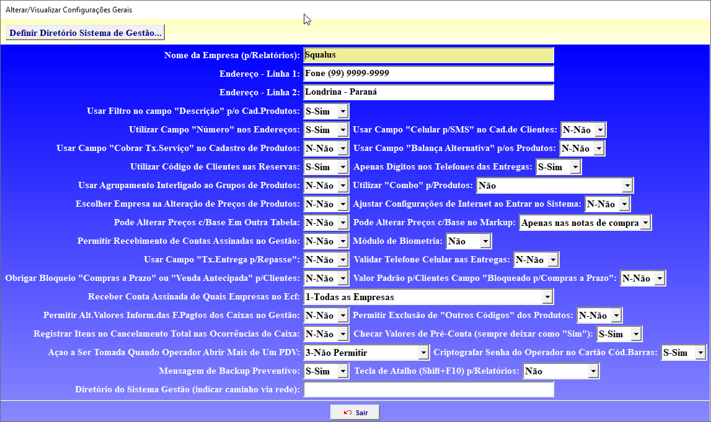
| Campo | Tipo | Descrição / Orientação de Suporte |
|---|---|---|
|
Nome da Empresa (p/Relatórios)
|
Texto | Nome exibido no cabeçalho de todos os relatórios impressos pelo sistema. Não interfere no cadastro fiscal nem no CNPJ da empresa — é apenas para fins de impressão. |
|
Endereço - Linha 1
|
Texto | Primeira linha de endereço/contato impressa nos relatórios. Frequentemente utilizada para o telefone do estabelecimento ou o logradouro completo. |
|
Endereço - Linha 2
|
Texto | Segunda linha de endereço impressa nos relatórios. Normalmente usada para Cidade – Estado ou complemento do endereço. |
|
Diretório do Sistema Gestão (indicar caminho via rede)
|
Caminho UNC | Caminho de rede (UNC) para a pasta de instalação do Gestão no servidor. Obrigatório em ambientes
multi-estação para que os PDVs localizem o banco de dados central. Deixar em branco quando a instalação
for local (servidor e PDV na mesma máquina). Exemplo: \\SERVIDOR01\Squalus |
| Campo | Padrão | Descrição |
|---|---|---|
|
Usar Filtro no campo "Descrição" p/o Cad. Produtos
|
S-Sim | Quando S-Sim, a pesquisa de produtos no cadastro funciona por filtro dinâmico: o sistema exibe os resultados enquanto o usuário digita, sem precisar pressionar Enter. Quando N-Não, é necessário pressionar Enter para acionar a busca. |
|
Usar Campo "Cobrar Tx. Serviço" no Cadastro de Produtos
|
N-Não | Exibe o campo "Cobrar Taxa de Serviço" na ficha de cada produto, permitindo definir individualmente quais itens do cardápio incluem a taxa de serviço. Ativar somente se o restaurante cobra taxa por produto específico, e não de forma global. |
|
Usar Campo "Balança Alternativa" p/os Produtos
|
N-Não | Habilita um campo no cadastro de produto para vincular uma balança alternativa (secundária). Útil em estabelecimentos que operam com mais de um tipo ou marca de balança integrada ao sistema. |
|
Usar Agrupamento Interligado ao Grupos de Produtos
|
N-Não | Quando S-Sim, o agrupamento de produtos fica vinculado diretamente à estrutura de grupos cadastrada no sistema, mantendo hierarquia coerente entre grupo e agrupamento. Impacta a exibição em relatórios e na tela do PDV. |
|
Utilizar "Combo" p/Produtos
|
Não | Ativa o módulo de montagem de combos. Permite criar produtos compostos por outros itens do cardápio com regras de preço e substituição. Requer configuração adicional no cadastro de produtos após habilitar. |
|
Permitir Exclusão de "Outros Códigos" dos Produtos
|
N-Não | Quando S-Sim, o usuário pode excluir códigos de barras alternativos (EAN, balança ou PDV) cadastrados em um produto. Manter N-Não para evitar exclusão acidental de códigos vinculados a equipamentos de leitura. |
| Campo | Padrão | Descrição |
|---|---|---|
|
Utilizar Campo "Número" nos Endereços
|
S-Sim | Quando S-Sim, o campo de número do imóvel é exibido separadamente do logradouro no cadastro de clientes e na tela de entregas. Facilita a integração com sistemas de roteirização e mapa. |
|
Usar Campo "Celular p/SMS" no Cad. de Clientes
|
N-Não | Adiciona um campo específico de número de celular no cadastro de clientes destinado ao envio de SMS (confirmação de pedido, promoções). Ativar somente se houver módulo de SMS contratado e configurado. |
|
Utilizar Código de Clientes nas Reservas
|
S-Sim | Quando S-Sim, ao registrar uma reserva de mesa o sistema vincula o código do cliente cadastrado, permitindo consultar histórico de reservas por cliente e facilitar o atendimento na chegada. |
|
Apenas Dígitos nos Telefones das Entregas
|
S-Sim | Quando S-Sim, o campo de telefone na tela de entregas aceita somente números, sem traços, parênteses ou espaços. Padroniza o formato e facilita integração com discagem automática ou WhatsApp. |
|
Usar Campo "Tx. Entrega p/Repasse"
|
N-Não | Adiciona um campo de taxa de entrega individual por pedido, cujo valor é repassado ao entregador no fechamento do caixa. Ativar quando o estabelecimento opera com entregadores próprios e repassa a taxa de delivery a eles. |
|
Validar Telefone Celular nas Entregas
|
N-Não | Quando S-Sim, o sistema valida o formato do número de celular antes de confirmar o pedido de entrega. Útil para evitar erros de digitação e garantir que o número seja válido para contato ou envio de SMS/WhatsApp. |
|
Obrigar Bloqueio "Compras a Prazo" ou "Venda Antecipada" p/Clientes
|
N-Não | Quando S-Sim, o sistema exige que o campo "Bloqueado para Compras a Prazo" seja preenchido explicitamente no cadastro do cliente antes de salvar. Evita clientes com situação de crédito indefinida. |
|
Valor Padrão p/Clientes Campo "Bloqueado p/Compras a Prazo"
|
N-Não | Define o valor padrão do campo "Bloqueado para Compras a Prazo" ao cadastrar um novo cliente. Quando S-Sim, todo cliente novo já é criado bloqueado para crédito — o operador precisa liberar manualmente. Quando N-Não, clientes novos chegam liberados por padrão. |
| Campo | Padrão | Descrição |
|---|---|---|
|
Escolher Empresa na Alteração de Preços de Produtos
|
N-Não | Em ambientes com mais de uma empresa cadastrada, quando S-Sim o sistema pergunta qual empresa terá os preços alterados antes de aplicar a mudança. Quando N-Não, a alteração afeta sempre a empresa logada. |
|
Pode Alterar Preços c/Base Em Outra Tabela
|
N-Não | Quando S-Sim, permite usar os valores de uma tabela de preços alternativa como referência para atualizar os preços da tabela principal (ex.: reajustar tabela 1 com base nos preços da tabela 2 mais um percentual). |
|
Pode Alterar Preços c/Base no Markup
|
Apenas nas notas de compra | Controla em quais momentos o sistema permite recalcular o preço de venda automaticamente com base no
markup (margem) configurado por produto. Sempre: permite em qualquer alteração de custo. Apenas nas notas de compra: recalcula somente ao lançar uma nota de entrada. Nunca: desativa o recálculo automático. |
| Campo | Padrão | Descrição |
|---|---|---|
|
Permitir Recebimento de Contas Assinadas no Gestão
|
N-Não | Quando S-Sim, habilita o recebimento, dentro do módulo Gestão, de contas que foram assinadas eletronicamente pelo cliente no ECF/PDV (ex.: comanda assinada). Quando N-Não, esse recebimento só pode ser feito diretamente no caixa do PDV. |
|
Receber Conta Assinada de Quais Empresas no ECF
|
1-Todas as Empresas | Define de quais empresas o ECF/PDV pode receber contas assinadas. Utilizado em operações multi-empresa com caixas compartilhados entre filiais. Selecionar a empresa específica quando for necessário restringir o recebimento. |
|
Permitir Alterar Valores das Formas de Pagamento dos Caixas no Gestão
|
N-Não | Quando S-Sim, o usuário do módulo Gestão pode editar os valores das formas de pagamento já informados no fechamento de caixa do PDV (ex.: corrigir valor de dinheiro vs. cartão após fechamento). Manter N-Não para preservar integridade dos fechamentos. |
| Campo | Padrão | Descrição |
|---|---|---|
|
Módulo de Biometria
|
Não | Ativa o suporte a leitor biométrico para autenticação de operadores no PDV (em substituição ou complemento ao cartão de código de barras). Requer hardware de biometria instalado e driver configurado no sistema operacional. |
|
Ajustar Configurações de Internet ao Entrar no Sistema
|
N-Não | Quando S-Sim, o sistema redefine configurações de proxy e internet ao iniciar. Usar somente se o cliente relatar conflitos de rede no momento da abertura do sistema — em situações normais deve permanecer N-Não. |
|
Registrar Itens no Cancelamento Total nas Ocorrências do Caixa
|
N-Não | Quando S-Sim, todos os itens de um pedido cancelado integralmente são detalhados no log de ocorrências do caixa, facilitando auditoria e controle de cancelamentos por operador. |
|
Checar Valores de Pré-Conta (sempre deixar como S-Sim)
|
S-Sim | Manter sempre como S-Sim. O sistema valida os valores da pré-conta (subtotal do pedido aberto) antes de efetuar o fechamento, garantindo que o valor cobrado corresponde ao que foi consumido. Alterar para N-Não pode causar divergências de valor entre a pré-conta e o documento fiscal emitido. |
|
Ação a Ser Tomada Quando Operador Abrir Mais de Um PDV
|
3-Não Permitir | Controla o comportamento quando o mesmo operador tenta abrir um segundo terminal PDV simultaneamente. 1-Avisar: exibe alerta mas permite abrir. 2-Fechar o Anterior: encerra automaticamente a sessão no primeiro PDV. 3-Não Permitir: bloqueia a abertura do segundo PDV. Recomendado: opção 3 para evitar conflitos de caixa. |
|
Criptografar Senha do Operador no Cartão Cód. Barras
|
S-Sim | Quando S-Sim, a senha do operador é gravada de forma criptografada no cartão de código de barras, impedindo leitura direta da senha em caso de clonagem do cartão. Manter sempre S-Sim por segurança. |
|
Mensagem de Backup Preventivo
|
S-Sim | Quando S-Sim, o sistema exibe um lembrete de backup ao ser aberto. Manter S-Sim para reforçar a rotina de backup do cliente e evitar perda de dados em caso de falha de hardware. |
|
Tecla de Atalho (Shift+F10) p/Relatórios
|
Não | Quando ativado, o atalho de teclado Shift+F10 abre a tela de relatórios de qualquer ponto do sistema, sem precisar navegar pelos menus. Útil para estabelecimentos que consultam relatórios com frequência durante a operação. |
Configurações Gerais 2
Layout do sistema, brindes, adiantamentos, log de ocorrências e mensagens remotas.
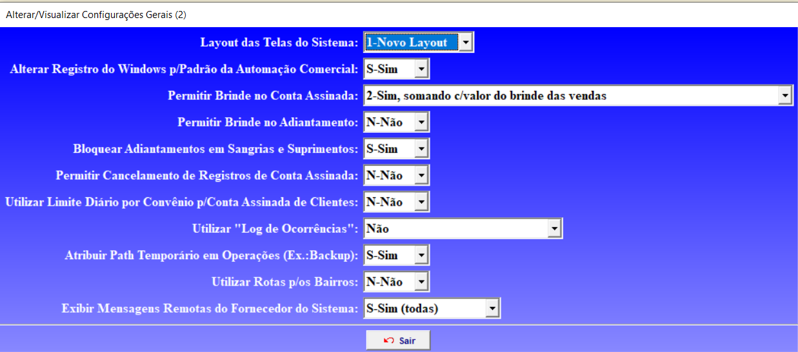
| Campo | Tipo | Descrição / Orientação de Suporte |
|---|---|---|
|
Layout das Telas do Sistema
|
Seleção | Define o tema visual das telas do sistema. 1-Novo Layout usa a interface mais recente e é o padrão recomendado. Opções legadas mantêm o visual antigo — alterar somente se o cliente tiver dificuldade de adaptação à nova interface. |
|
Alterar Registro do Windows p/Padrão da Automação Comercial
|
S/N | Quando S-Sim, ajusta entradas no registro do Windows para garantir compatibilidade com o ambiente de automação comercial (impressoras fiscais, balanças, etc.). Usar com cautela em máquinas com políticas de segurança corporativa restritivas. |
| Campo | Tipo | Descrição / Orientação de Suporte |
|---|---|---|
|
Permitir Brinde no Conta Assinada
|
Seleção | Controla se brindes são permitidos em vendas de conta assinada e como o valor é tratado. 2-Sim, somando c/valor do brinde das vendas inclui o valor do brinde no total da conta. Verificar com o cliente a política comercial antes de alterar. |
|
Permitir Brinde no Adiantamento
|
S/N | Quando S-Sim, habilita o uso de brindes em operações de adiantamento. Normalmente mantido como N-Não para evitar inconsistências no fluxo de caixa e facilitar o fechamento. |
|
Bloquear Adiantamentos em Sangrias e Suprimentos
|
S/N | Quando S-Sim, impede que operações de adiantamento sejam realizadas em conjunto com sangrias e suprimentos de caixa, evitando que o saldo fique inconsistente durante o processo. |
| Campo | Tipo | Descrição / Orientação de Suporte |
|---|---|---|
|
Permitir Cancelamento de Registros de Conta Assinada
|
S/N | Quando S-Sim, permite que operadores autorizados cancelem registros de conta assinada já gravados. Manter N-Não para maior controle e rastreabilidade — cancelamentos só devem ser feitos via supervisor. |
|
Utilizar Limite Diário por Convênio p/Conta Assinada de Clientes
|
S/N | Quando S-Sim, aplica um teto de consumo diário por convênio na conta assinada. Útil para estabelecimentos que atendem empresas e precisam controlar o gasto diário por funcionário ou departamento. |
| Campo | Tipo | Descrição / Orientação de Suporte |
|---|---|---|
|
Utilizar "Log de Ocorrências"
|
Seleção | Define se o sistema registra um log detalhado de ocorrências operacionais. Não desativa o log. Ativar somente quando houver necessidade de rastrear eventos internos para diagnóstico de problemas — o log pode crescer e impactar performance. |
|
Atribuir Path Temporário em Operações (Ex.:Backup)
|
S/N | Quando S-Sim, o sistema usa um diretório temporário para operações como backup, evitando sobrecarga ou conflito na pasta principal de instalação. Recomendado manter ativo em ambientes com múltiplos usuários. |
|
Utilizar Rotas p/os Bairros
|
S/N | Quando S-Sim, habilita o cadastro e uso de rotas de entrega segmentadas por bairro. Ativar apenas para estabelecimentos que operam com delivery próprio e precisam organizar a distribuição por região. |
|
Exibir Mensagens Remotas do Fornecedor do Sistema
|
Seleção | Controla se mensagens enviadas remotamente pelo fornecedor (Squalus) são exibidas ao usuário. S-Sim (todas) exibe todas as comunicações recebidas. Pode ser restringido ou desativado se o cliente não quiser interrupções durante o expediente. |
Programa de Fidelidade
Configurações de pontuação, trocas, intervalos e bloqueios do programa de fidelidade.
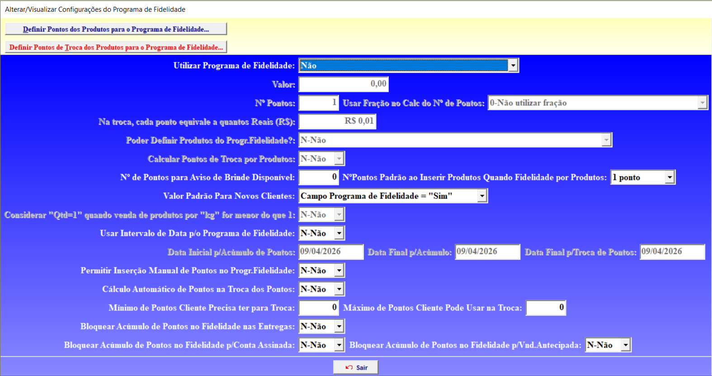
| Campo | Tipo | Descrição / Orientação de Suporte |
|---|---|---|
|
Utilizar Programa de Fidelidade
|
Seleção | Ativa ou desativa o programa de fidelidade. Quando Não, todos os demais campos desta tela são ignorados pelo sistema. Ativar somente após configurar os demais parâmetros para evitar comportamento inesperado no PDV. |
|
Valor
|
Numérico | Valor mínimo de compra (em R$) para que o cliente acumule pontos. Se 0,00, qualquer venda gera pontos. Ajustar conforme a política comercial do cliente. |
|
Nº Pontos
|
Numérico | Quantidade de pontos concedidos por unidade do valor configurado. Ex.: 1 ponto a cada R$ 1,00 gasto. Funciona em conjunto com o campo Valor. |
|
Usar Fração no Calc do Nº de Pontos
|
Seleção | Define se frações de pontos são consideradas no cálculo. 0-Não utilizar fração arredonda sempre para baixo, garantindo que o cliente só receba pontos inteiros. Ativar fração quando o cliente precisar de maior precisão no acúmulo. |
|
Na troca, cada ponto equivale a quantos Reais (R$)
|
Numérico | Taxa de conversão de pontos em reais no momento do resgate. Ex.: R$ 0,01 significa que 100 pontos valem R$ 1,00. Conferir junto ao cliente antes de alterar para não prejudicar clientes com pontos já acumulados. |
| Campo | Tipo | Descrição / Orientação de Suporte |
|---|---|---|
|
Poder Definir Produtos do Progr.Fidelidade?
|
S/N | Quando S-Sim, permite restringir o programa de fidelidade a um conjunto específico de produtos (configurado pelo botão Definir Pontos dos Produtos no topo da tela). Útil quando nem todos os itens do cardápio participam do programa. |
|
Calcular Pontos de Troca por Produtos
|
S/N | Quando S-Sim, o custo em pontos de cada produto na troca é definido individualmente (via botão Definir Pontos de Troca dos Produtos). Quando N-Não, usa a taxa global configurada no campo Na troca, cada ponto equivale a.... |
|
Nº de Pontos para Aviso de Brinde Disponível
|
Numérico | Quantidade de pontos a partir da qual o sistema exibe um aviso no PDV informando que o cliente tem brinde disponível. 0 desativa o aviso. |
|
NºPontos Padrão ao Inserir Produtos Quando Fidelidade por Produtos
|
Seleção | Pontuação padrão atribuída automaticamente a novos produtos cadastrados quando o programa é configurado por produto. Evita que novos itens fiquem sem pontuação definida. |
| Campo | Tipo | Descrição / Orientação de Suporte |
|---|---|---|
|
Valor Padrão Para Novos Clientes
|
Seleção | Define se novos clientes cadastrados já entram automaticamente no programa de fidelidade. Campo Programa de Fidelidade = "Sim" insere todos os novos clientes no programa por padrão. |
|
Considerar "Qtd=1" quando venda de produtos por "kg" for menor do que 1
|
S/N | Quando S-Sim, vendas fracionadas (ex.: 0,3 kg) são tratadas como 1 unidade para fins de pontuação. Ativar quando o cliente quiser garantir pontos mesmo em compras de pequenas quantidades em peso. |
|
Usar Intervalo de Data p/o Programa de Fidelidade
|
S/N | Quando S-Sim, o acúmulo e a troca de pontos ficam restritos ao período definido nos campos de data abaixo. Útil para campanhas sazonais ou promoções com prazo determinado. |
|
Data Inicial p/Acúmulo de Pontos
|
Data | Data de início do período em que o cliente pode acumular pontos. Só tem efeito quando Usar Intervalo de Data está ativo. |
|
Data Final p/Acúmulo
|
Data | Data de encerramento do acúmulo de pontos. Após essa data, vendas não geram novos pontos. Só tem efeito quando Usar Intervalo de Data está ativo. |
|
Data Final p/Troca de Pontos
|
Data | Data limite para o cliente resgatar os pontos acumulados. Pode ser diferente da data final de acúmulo — ex.: acúmulo até 31/12, troca até 31/01. Só tem efeito quando Usar Intervalo de Data está ativo. |
| Campo | Tipo | Descrição / Orientação de Suporte |
|---|---|---|
|
Permitir Inserção Manual de Pontos no Progr.Fidelidade
|
S/N | Quando S-Sim, operadores autorizados podem adicionar pontos manualmente ao saldo do cliente, sem vínculo com uma venda. Manter N-Não como padrão para garantir rastreabilidade — ativar somente mediante solicitação justificada do cliente. |
|
Cálculo Automático de Pontos na Troca dos Pontos
|
S/N | Quando S-Sim, o sistema calcula e aplica automaticamente o desconto em reais ao efetuar uma troca de pontos, sem que o operador precise informar o valor manualmente. |
|
Mínimo de Pontos Cliente Precisa ter para Troca
|
Numérico | Quantidade mínima de pontos que o cliente deve possuir para poder realizar uma troca. 0 desativa o limite mínimo. Usar para evitar resgates de valores muito baixos que gerem mais custo operacional do que benefício. |
|
Máximo de Pontos Cliente Pode Usar na Troca
|
Numérico | Limite máximo de pontos que o cliente pode utilizar em uma única troca. 0 significa sem limite. Usar quando o cliente quiser controlar o desconto máximo concedido por transação. |
| Campo | Tipo | Descrição / Orientação de Suporte |
|---|---|---|
|
Bloquear Acúmulo de Pontos no Fidelidade nas Entregas
|
S/N | Quando S-Sim, vendas realizadas como entrega não geram pontos no programa de fidelidade. Útil quando o cliente quer restringir o programa ao consumo no local. |
|
Bloquear Acúmulo de Pontos no Fidelidade p/Conta Assinada
|
S/N | Quando S-Sim, vendas lançadas em conta assinada não acumulam pontos. Recomendado quando o programa de fidelidade deve se aplicar apenas a pagamentos à vista ou imediatos. |
|
Bloquear Acúmulo de Pontos no Fidelidade p/Vnd.Antecipada
|
S/N | Quando S-Sim, vendas antecipadas não geram pontos no programa de fidelidade. Manter conforme a política comercial do estabelecimento. |
Venda Antecipada
Configurações de modalidade, precificação por peso, saldo negativo e bloqueio de clientes.
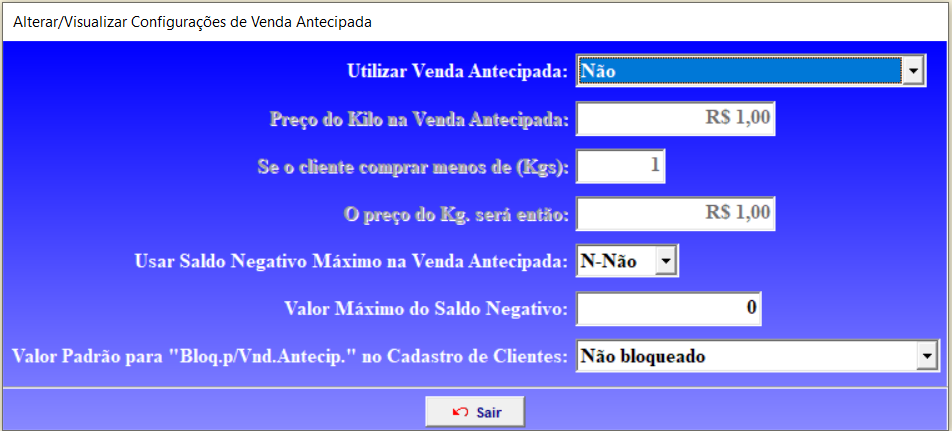
| Campo | Tipo | Descrição / Orientação de Suporte |
|---|---|---|
|
Utilizar Venda Antecipada
|
Seleção | Define se e como a venda antecipada é utilizada. Sim, por preço habilita o módulo com base em valor monetário por kg. Quando desativado, os demais campos desta tela são ignorados. Confirmar com o cliente a modalidade antes de alterar. |
|
Preço do Kilo na Venda Antecipada
|
Numérico | Valor padrão cobrado por kg nas vendas antecipadas. Usado quando o cliente compra acima do limite definido no campo abaixo. Verificar se o preço está atualizado conforme a tabela vigente do cliente. |
|
Se o cliente comprar menos de (Kgs)
|
Numérico | Quantidade mínima em kg para aplicar o preço padrão do kilo. Compras abaixo desse valor terão o preço alternativo definido no campo O preço do Kg. será então. Permite diferenciar o preço para compras pequenas. |
|
O preço do Kg. será então
|
Numérico | Preço por kg aplicado quando a quantidade comprada for inferior ao limite definido no campo acima. Normalmente igual ou superior ao preço padrão, penalizando compras de menor volume. |
|
Usar Saldo Negativo Máximo na Venda Antecipada
|
S/N | Quando S-Sim, o sistema permite que o cliente fique com saldo negativo na venda antecipada, até o limite definido no campo abaixo. Manter N-Não como padrão para evitar exposição de crédito não controlada. |
|
Valor Máximo do Saldo Negativo
|
Numérico | Limite máximo em reais que o cliente pode ficar negativo na venda antecipada. Só tem efeito quando Usar Saldo Negativo Máximo está ativo. 0 sem limite definido. |
|
Valor Padrão para "Bloq.p/Vnd.Antecip." no Cadastro de Clientes
|
Seleção | Define o status padrão do campo de bloqueio de venda antecipada para clientes novos. Não bloqueado permite que todos os novos clientes utilizem a venda antecipada por padrão. Alterar para bloquear automaticamente caso o estabelecimento prefira liberar individualmente. |
Configurações de Estoque
Define o comportamento do sistema nas entradas, saídas, contagem e pedidos de compra relacionados ao estoque.
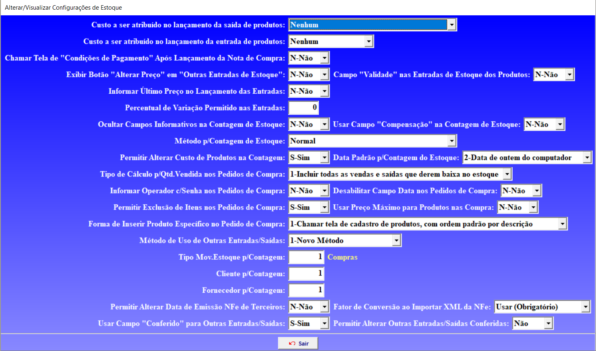
| Campo | Tipo | Descrição / Orientação de Suporte |
|---|---|---|
|
Custo a ser atribuído no lançamento da saída de produtos
|
Seleção | Define qual custo é registrado quando um produto sai do estoque. Nenhum não atribui custo automaticamente. Ajustar conforme a política de custo do cliente (ex.: último custo, médio). |
|
Custo a ser atribuído no lançamento da entrada de produtos
|
Seleção | Define qual custo é gravado na entrada de mercadoria. Nenhum não atribui custo automaticamente. Confirmar com o cliente qual método de custeio ele utiliza antes de alterar. |
|
Chamar Tela de "Condições de Pagamento" Após Lançamento da Nota de Compra
|
S/N | Quando S-Sim, após lançar uma nota de compra o sistema abre automaticamente a tela de condições de pagamento para registrar o financeiro da compra. Útil quando a empresa controla contas a pagar diretamente no lançamento. |
|
Exibir Botão "Alterar Preço" em "Outras Entradas de Estoque"
|
S/N | Quando S-Sim, exibe o botão para alterar o preço de venda diretamente nas outras entradas de estoque (transferências, ajustes). Ativar somente se o fluxo de trabalho do cliente exige essa funcionalidade nessa tela. |
|
Campo "Validade" nas Entradas de Estoque dos Produtos
|
S/N | Quando S-Sim, exibe o campo de data de validade nas entradas de estoque. Ativar para clientes que trabalham com produtos perecíveis e precisam registrar a validade de cada lote. |
|
Informar Último Preço no Lançamento das Entradas
|
S/N | Quando S-Sim, preenche automaticamente o campo de custo com o último preço pago pelo produto ao lançar uma nova entrada. Facilita a conferência e identificação de variações de custo. |
|
Percentual de Variação Permitido nas Entradas
|
Numérico | Define o percentual máximo de variação de custo aceito ao lançar uma entrada em relação ao último preço registrado. 0 desativa o controle de variação. Útil para alertar o operador sobre diferenças de preço suspeitas. |
| Campo | Tipo | Descrição / Orientação de Suporte |
|---|---|---|
|
Ocultar Campos Informativos na Contagem de Estoque
|
S/N | Quando S-Sim, oculta campos como saldo atual e custo durante a contagem, evitando que o operador seja influenciado pelos valores do sistema. Recomendado para inventários cegos. |
|
Usar Campo "Compensação" na Contagem de Estoque
|
S/N | Quando S-Sim, habilita o campo de compensação na contagem, permitindo ajustar diferenças específicas sem afetar o saldo total diretamente. Verificar com o cliente se o processo de inventário utiliza esse recurso. |
|
Método p/Contagem de Estoque
|
Seleção | Define a metodologia de contagem: Normal registra os itens contados diretamente. Outros métodos podem envolver etapas adicionais de conferência. Manter Normal na maioria dos casos, salvo orientação específica do cliente. |
|
Permitir Alterar Custo de Produtos na Contagem
|
S/N | Quando S-Sim, o operador pode editar o custo unitário dos produtos durante a contagem de estoque. Habilitar somente quando há necessidade de ajuste de custo junto ao inventário. |
|
Data Padrão p/Contagem do Estoque
|
Seleção | Define qual data é usada como padrão na contagem de estoque. 2-Data de ontem do computador usa o dia anterior, evitando que movimentos do dia corrente interfiram no inventário. Ajustar conforme o processo de fechamento do cliente. |
|
Tipo Mov.Estoque p/Contagem
|
Numérico | Código do tipo de movimento de estoque gerado pela contagem. Verificar na tabela de tipos de movimento qual código corresponde à contagem/inventário no sistema do cliente. |
|
Cliente p/Contagem
|
Numérico | Código do cliente padrão vinculado ao movimento gerado pela contagem de estoque. Geralmente um cliente interno ou fictício criado para esse fim. |
|
Fornecedor p/Contagem
|
Numérico | Código do fornecedor padrão vinculado ao movimento de contagem de estoque. Geralmente um fornecedor interno criado para esse fim. |
| Campo | Tipo | Descrição / Orientação de Suporte |
|---|---|---|
|
Tipo de Cálculo p/Qtd.Vendida nos Pedidos de Compra
|
Seleção | Define como o sistema calcula a quantidade vendida usada como base para sugestão de compra. 1-Incluir todas as vendas e saídas que derem baixa no estoque é o mais completo. Alterar somente se o cliente precisar de uma base de cálculo diferente. |
|
Informar Operador c/Senha nos Pedidos de Compra
|
S/N | Quando S-Sim, exige que o operador se identifique com senha ao realizar ou alterar pedidos de compra. Ativar em ambientes onde o controle de acesso a compras é necessário. |
|
Desabilitar Campo Data nos Pedidos de Compra
|
S/N | Quando S-Sim, o campo de data do pedido de compra fica bloqueado para edição, usando sempre a data automática do sistema. Ativar para evitar manipulação de datas nos pedidos. |
|
Permitir Exclusão de Itens nos Pedidos de Compra
|
S/N | Quando S-Sim, o operador pode excluir itens de um pedido de compra já criado. Manter S-Sim na maioria dos casos para flexibilidade na edição de pedidos. |
|
Usar Preço Máximo para Produtos nas Compra
|
S/N | Quando S-Sim, o sistema aplica o preço máximo cadastrado para o produto nos pedidos de compra, bloqueando valores acima desse limite. Útil para controle de custo de aquisição. |
|
Forma de Inserir Produto Específico no Pedido de Compra
|
Seleção | Define como produtos são adicionados manualmente a um pedido de compra. 1-Chamar tela de cadastro de produtos, com ordem padrão por descrição abre a busca padrão por nome. Alterar se o cliente preferir busca por código ou outra ordenação. |
| Campo | Tipo | Descrição / Orientação de Suporte |
|---|---|---|
|
Método de Uso de Outras Entradas/Saídas
|
Seleção | Define o método de processamento das outras entradas e saídas de estoque. 1-Novo Método utiliza o fluxo mais atual do sistema. Manter o padrão salvo pelo cliente, alterar somente sob orientação técnica. |
|
Permitir Alterar Data de Emissão NFe de Terceiros
|
S/N | Quando S-Sim, permite editar a data de emissão de NF-e de terceiros importadas (XML). Habilitar apenas quando o cliente precisa corrigir datas de notas de fornecedores com data divergente. |
|
Fator de Conversão ao Importar XML da NFe
|
Seleção | Define se o fator de conversão de unidades é aplicado ao importar XML de NF-e. Usar (Obrigatório) força a aplicação do fator cadastrado no produto. Manter como padrão para garantir conversão correta de unidades. |
|
Usar Campo "Conferido" para Outras Entradas/Saídas
|
S/N | Quando S-Sim, exibe o campo "Conferido" nas outras entradas e saídas, permitindo marcar o documento como conferido após a revisão. Útil para controle de qualidade no lançamento de movimentações. |
|
Permitir Alterar Outras Entradas/Saídas Conferidas
|
Seleção | Define se documentos já marcados como conferidos podem ser editados. Não bloqueia qualquer alteração após a conferência, garantindo integridade dos dados. Alterar somente se o cliente precisar de flexibilidade na edição pós-conferência. |
Fechamento de Caixa
Define o que é impresso e exibido no relatório de fechamento do caixa.
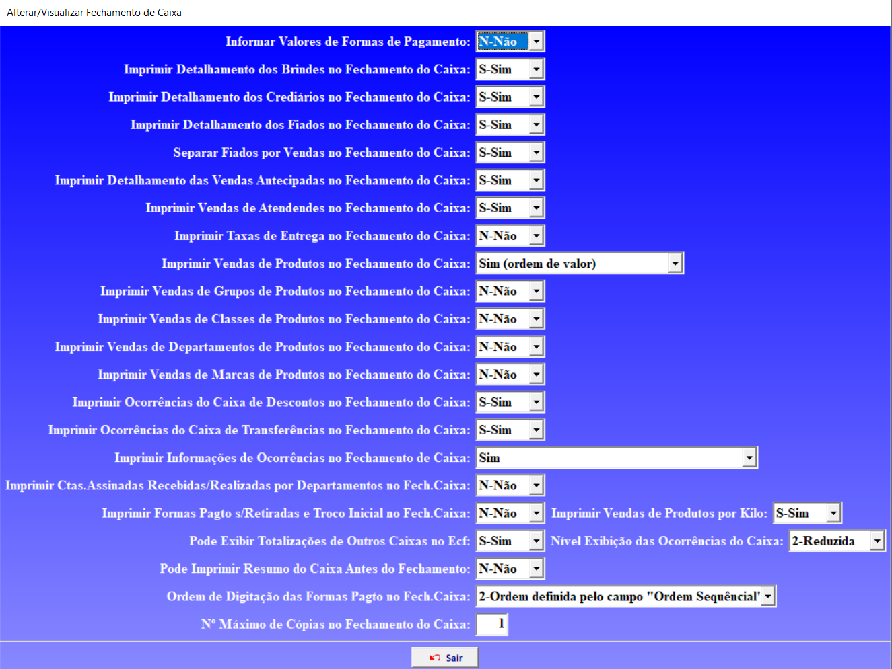
| Campo | Tipo | Descrição / Orientação de Suporte |
|---|---|---|
|
Informar Valores de Formas de Pagamento
|
S/N | Quando S-Sim, o operador precisa informar manualmente os valores de cada forma de pagamento ao fechar o caixa (conferência de gaveta). Manter N-Não quando o estabelecimento não realiza essa conferência no fechamento. |
| Campo | Tipo | Descrição / Orientação de Suporte |
|---|---|---|
|
Imprimir Detalhamento dos Brindes no Fechamento do Caixa
|
S/N | Quando S-Sim, inclui no relatório de fechamento a lista detalhada de brindes concedidos no período. Desativar se o cliente não usa brindes ou não quer esse detalhe no relatório. |
|
Imprimir Detalhamento dos Crediários no Fechamento do Caixa
|
S/N | Quando S-Sim, lista as vendas a crediário no fechamento do caixa, facilitando o controle de contas a receber abertas no período. |
|
Imprimir Detalhamento dos Fiados no Fechamento do Caixa
|
S/N | Quando S-Sim, exibe no fechamento a relação de vendas lançadas como fiado. Útil para estabelecimentos que controlam fiado manualmente ao final do turno. |
|
Separar Fiados por Vendas no Fechamento do Caixa
|
S/N | Quando S-Sim, os fiados são listados individualmente por venda no relatório, em vez de um total consolidado. Ativar quando o operador precisa rastrear cada lançamento de fiado. |
|
Imprimir Detalhamento das Vendas Antecipadas no Fechamento do Caixa
|
S/N | Quando S-Sim, inclui as vendas antecipadas do período no relatório de fechamento. Ativar em estabelecimentos que utilizam o módulo de venda antecipada. |
|
Imprimir Vendas de Atendendes no Fechamento do Caixa
|
S/N | Quando S-Sim, detalha as vendas por atendente no relatório de fechamento, permitindo acompanhar o desempenho individual de cada operador no turno. |
|
Imprimir Taxas de Entrega no Fechamento do Caixa
|
S/N | Quando S-Sim, inclui o total de taxas de entrega cobradas no período. Ativar em estabelecimentos com delivery que precisam contabilizar esse valor no fechamento. |
| Campo | Tipo | Descrição / Orientação de Suporte |
|---|---|---|
|
Imprimir Vendas de Produtos no Fechamento do Caixa
|
Seleção | Define se e como os produtos vendidos aparecem no fechamento. Sim (ordem de valor) lista os produtos do maior para o menor faturamento. Outras opções incluem ordem alfabética ou por quantidade. Desativar em estabelecimentos com muitos produtos para evitar relatórios muito longos. |
|
Imprimir Vendas de Grupos de Produtos no Fechamento do Caixa
|
S/N | Quando S-Sim, totaliza as vendas agrupadas por grupo de produto no fechamento. Útil para gestores que acompanham o desempenho por categoria. |
|
Imprimir Vendas de Classes de Produtos no Fechamento do Caixa
|
S/N | Quando S-Sim, agrupa as vendas por classe de produto no relatório. Ativar apenas se o cliente usa a classificação de produtos no cadastro. |
|
Imprimir Vendas de Departamentos de Produtos no Fechamento do Caixa
|
S/N | Quando S-Sim, totaliza as vendas por departamento no fechamento. Ativar em estabelecimentos que utilizam departamentos no cadastro de produtos. |
|
Imprimir Vendas de Marcas de Produtos no Fechamento do Caixa
|
S/N | Quando S-Sim, exibe as vendas agrupadas por marca no fechamento. Útil para clientes que trabalham com múltiplas marcas e precisam de controle por fornecedor. |
| Campo | Tipo | Descrição / Orientação de Suporte |
|---|---|---|
|
Imprimir Ocorrências do Caixa de Descontos no Fechamento do Caixa
|
S/N | Quando S-Sim, lista os descontos aplicados durante o turno no relatório de fechamento. Importante para auditoria e controle de margens. |
|
Imprimir Ocorrências do Caixa de Transferências no Fechamento do Caixa
|
S/N | Quando S-Sim, inclui as transferências entre caixas realizadas no período. Ativar quando o estabelecimento faz sangrias ou suprimentos entre caixas durante o turno. |
|
Imprimir Informações de Ocorrências no Fechamento de Caixa
|
Seleção | Controla o nível de detalhe das ocorrências exibidas no fechamento. Sim inclui as informações; opções podem limitar o tipo de ocorrência exibida. Verificar com o cliente o nível de detalhe desejado. |
|
Imprimir Ctas.Assinadas Recebidas/Realizadas por Departamentos no Fech.Caixa
|
S/N | Quando S-Sim, detalha as contas assinadas recebidas e realizadas separadas por departamento no fechamento. Ativar em estabelecimentos que controlam conta assinada por departamento. |
| Campo | Tipo | Descrição / Orientação de Suporte |
|---|---|---|
|
Imprimir Formas Pagto s/Retiradas e Troco Inicial no Fech.Caixa
|
S/N | Quando S-Sim, os valores das formas de pagamento são exibidos já descontando as retiradas (sangrias) e o troco inicial, mostrando o saldo líquido por forma de pagamento. |
|
Imprimir Vendas de Produtos por Kilo
|
S/N | Quando S-Sim, inclui no fechamento o relatório de produtos vendidos por peso (kg). Ativar em estabelecimentos com balança ou produtos fracionados. |
|
Pode Exibir Totalizações de Outros Caixas no Ecf
|
S/N | Quando S-Sim, o ECF pode exibir os totais consolidados de outros caixas além do caixa atual. Útil em ambientes com múltiplos PDVs onde o gerente precisa de visão consolidada. |
|
Nível Exibição das Ocorrências do Caixa
|
Seleção | Define a quantidade de informação exibida nas ocorrências do caixa. 2-Reduzida mostra um resumo compacto. Aumentar o nível para mais detalhes quando necessário para auditoria. |
|
Pode Imprimir Resumo do Caixa Antes do Fechamento
|
S/N | Quando S-Sim, permite que o operador imprima um resumo parcial do caixa a qualquer momento, sem fechar o turno. Útil para conferências durante o expediente. |
|
Ordem de Digitação das Formas Pagto no Fech.Caixa
|
Seleção | Define a ordem em que as formas de pagamento aparecem para digitação no fechamento. 2-Ordem definida pelo campo "Ordem Sequêncial" usa a sequência configurada no cadastro de formas de pagamento. |
|
Nº Máximo de Cópias no Fechamento do Caixa
|
Numérico | Quantidade máxima de vias que o sistema permite imprimir no fechamento do caixa. 1 limita a uma via, evitando impressões desnecessárias. Aumentar se o cliente precisar de mais cópias por padrão. |
Contas a Pagar / Conta Corrente
Parâmetros de bloqueio, integração C/C, plano de contas e vencimento no módulo financeiro.
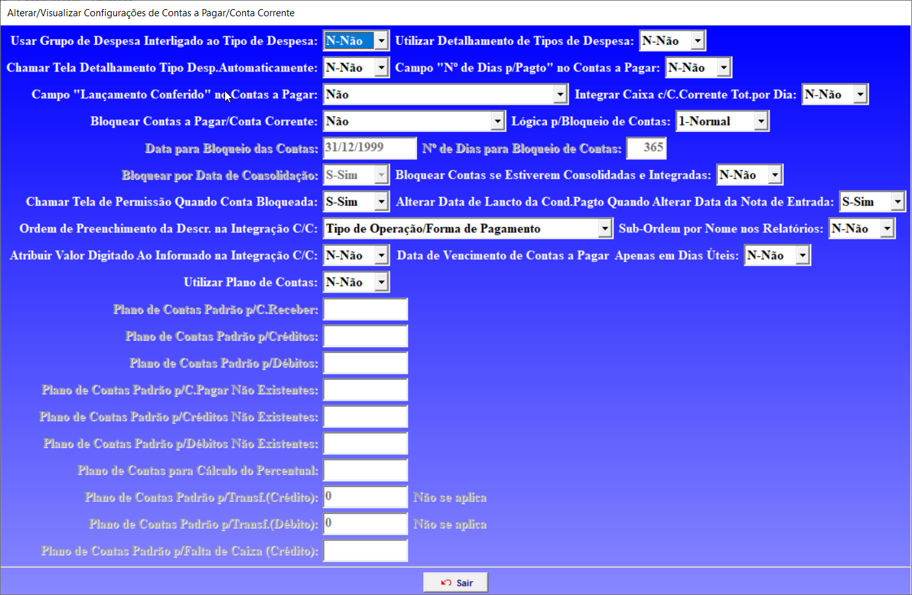
| Campo | Padrão | Descrição / Orientação de Suporte |
|---|---|---|
|
Usar Grupo de Despesa Interligado ao Tipo de Despesa
|
N-Não | Quando S-Sim, o grupo de despesa fica vinculado ao tipo de despesa, forçando consistência hierárquica no lançamento de contas a pagar. Ativar somente se o cliente usa essa estrutura de classificação financeira. |
|
Utilizar Detalhamento de Tipos de Despesa
|
N-Não | Habilita um nível adicional de detalhamento nos tipos de despesa. Ativar quando o cliente precisa de granularidade maior na classificação das despesas financeiras. |
|
Chamar Tela Detalhamento Tipo Desp. Automaticamente
|
N-Não | Quando S-Sim, a tela de detalhamento do tipo de despesa é aberta automaticamente ao lançar uma conta a pagar. Depende da opção "Utilizar Detalhamento de Tipos de Despesa" estar ativa. |
|
Campo "Nº de Dias p/Pagto" no Contas a Pagar
|
N-Não | Exibe o campo de número de dias para pagamento na tela de contas a pagar. Útil para clientes que controlam prazo médio de pagamento por lançamento. |
|
Campo "Lançamento Conferido" no Contas a Pagar
|
Não | Adiciona um campo de conferência no lançamento de contas a pagar, permitindo marcar registros já revisados. Útil para equipes que fazem dupla conferência dos lançamentos financeiros. |
|
Integrar Caixa c/C.Corrente Tot.por Dia
|
N-Não | Quando S-Sim, a integração do caixa com a conta corrente é feita de forma totalizadora por dia (um único lançamento diário), em vez de lançamento por lançamento. Reduz o volume de registros na conta corrente. |
| Campo | Padrão | Descrição / Orientação de Suporte |
|---|---|---|
|
Bloquear Contas a Pagar/Conta Corrente
|
Não | Define se o sistema bloqueia alterações em contas a pagar e conta corrente. Quando ativo, impede edição de lançamentos anteriores à data de bloqueio configurada. |
|
Lógica p/Bloqueio de Contas
|
1-Normal | Define a regra de bloqueio aplicada. 1-Normal usa a data de bloqueio configurada como referência fixa. Verificar com o cliente qual lógica se adequa ao fluxo de fechamento financeiro dele. |
|
Data para Bloqueio das Contas
|
Data | Data a partir da qual lançamentos anteriores ficam bloqueados para edição. Padrão 31/12/1999 efetivamente não bloqueia nada — alterar para a data de fechamento do período desejado. |
|
Nº de Dias para Bloqueio de Contas
|
365 | Número de dias retroativos usados como janela de bloqueio quando a lógica é por dias. Ajustar conforme a política de bloqueio de período do cliente. |
|
Bloquear por Data de Consolidação
|
S-Sim | Quando S-Sim, o bloqueio considera a data de consolidação do lançamento (data em que foi integrado/fechado), e não apenas a data de lançamento. |
|
Bloquear Contas se Estiverem Consolidadas e Integradas
|
N-Não | Quando S-Sim, contas que já foram consolidadas e integradas ao caixa/conta corrente ficam bloqueadas automaticamente para alteração, independente da data de bloqueio. |
|
Chamar Tela de Permissão Quando Conta Bloqueada
|
S-Sim | Quando S-Sim, ao tentar editar uma conta bloqueada o sistema exibe a tela de permissão (senha de supervisor), em vez de simplesmente impedir a ação. Manter ativo para permitir exceções supervisionadas. |
| Campo | Padrão | Descrição / Orientação de Suporte |
|---|---|---|
|
Alterar Data de Lancto da Cond.Pagto Quando Alterar Data da Nota de Entrada
|
S-Sim | Quando S-Sim, ao alterar a data de uma nota de entrada o sistema recalcula automaticamente as datas de vencimento das condições de pagamento vinculadas. Manter ativo para evitar inconsistências de prazo. |
|
Ordem de Preenchimento da Descr. na Integração C/C
|
Tipo de Operação/Forma de Pagamento | Define como é gerada a descrição do lançamento na conta corrente durante a integração. Cada opção monta o texto de forma diferente — verificar com o cliente qual formato facilita a conciliação bancária. |
|
Sub-Ordem por Nome nos Relatórios
|
N-Não | Quando S-Sim, os relatórios financeiros são ordenados por nome dentro de cada grupo/tipo. Ativar quando o cliente precisa de listagens alfabéticas por fornecedor/cliente nos relatórios de contas. |
|
Atribuir Valor Digitado Ao Informado na Integração C/C
|
N-Não | Quando S-Sim, o valor digitado manualmente sobrepõe o valor calculado automaticamente durante a integração com a conta corrente. Usar com cautela — pode gerar divergências contábeis. |
|
Data de Vencimento de Contas a Pagar Apenas em Dias Úteis
|
N-Não | Quando S-Sim, datas de vencimento que caem em fins de semana ou feriados são automaticamente ajustadas para o próximo dia útil. Ativar conforme a política de pagamento do cliente. |
| Campo | Padrão | Descrição / Orientação de Suporte |
|---|---|---|
|
Utilizar Plano de Contas
|
N-Não | Habilita o módulo de plano de contas contábil integrado ao financeiro. Quando N-Não, os campos de plano de contas abaixo são ignorados. Ativar somente se o cliente usa plano de contas no sistema. |
|
Plano de Contas Padrão p/C.Receber
|
Código | Código do plano de contas vinculado automaticamente aos lançamentos de contas a receber. Preencher com o código da conta contábil de receita do cliente. |
|
Plano de Contas Padrão p/Créditos
|
Código | Código do plano de contas para lançamentos de crédito (entradas) na conta corrente. Verificar com o contador do cliente qual conta utilizar. |
|
Plano de Contas Padrão p/Débitos
|
Código | Código do plano de contas para lançamentos de débito (saídas) na conta corrente. Verificar com o contador do cliente qual conta utilizar. |
|
Plano de Contas Padrão p/C.Pagar Não Existentes
|
Código | Conta contábil de fallback para contas a pagar que não possuem plano de contas cadastrado. Evita erros de integração quando um lançamento não encontra sua conta específica. |
|
Plano de Contas Padrão p/Créditos Não Existentes
|
Código | Conta contábil de fallback para créditos sem plano de contas definido. Garantia de que a integração contábil não falha por ausência de mapeamento. |
|
Plano de Contas Padrão p/Débitos Não Existentes
|
Código | Conta contábil de fallback para débitos sem plano de contas definido. |
|
Plano de Contas para Cálculo do Percentual
|
Código | Conta contábil usada como base para cálculo de percentuais financeiros (rateios, centros de custo). Verificar com o contador qual conta representa a base de cálculo desejada. |
|
Plano de Contas Padrão p/Transf.(Crédito)
|
0 | Conta contábil para o lado crédito das transferências entre contas correntes. Valor 0 = não se aplica (transferências não geram lançamento contábil). |
|
Plano de Contas Padrão p/Transf.(Débito)
|
0 | Conta contábil para o lado débito das transferências entre contas correntes. Valor 0 = não se aplica. |
|
Plano de Contas Padrão p/Falta de Caixa (Crédito)
|
Código | Conta contábil creditada quando há falta de caixa no fechamento. Geralmente uma conta de ajuste ou diferença de caixa — verificar com o contador do cliente. |
Dados p/ Lançamento de Falta de Caixa
Define os parâmetros usados para lançar automaticamente no contas a pagar as faltas de caixa que ocorrerem na integração das formas de pagamento com a conta corrente.
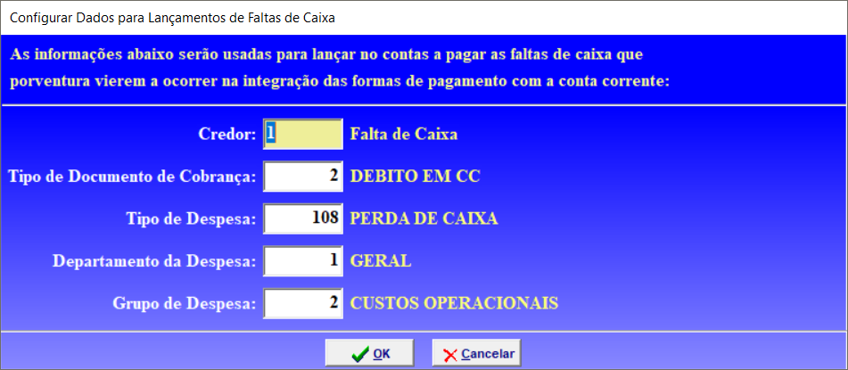
As informações configuradas aqui são usadas para lançar automaticamente no contas a pagar as faltas de caixa que vierem a ocorrer na integração das formas de pagamento com a conta corrente.
| Campo | Padrão | Descrição / Orientação de Suporte |
|---|---|---|
|
Credor
|
Texto | Código e nome do credor que receberá o lançamento da falta de caixa no contas a pagar (ex.: 1 — Falta de Caixa). Deve existir no cadastro de credores/fornecedores. |
|
Tipo de Documento de Cobrança
|
Texto | Código e descrição do tipo de documento utilizado para registrar a falta (ex.: 2 — DÉBITO EM CC). Deve corresponder a um tipo de documento cadastrado no financeiro. |
|
Tipo de Despesa
|
Texto | Código e descrição do tipo de despesa que classifica a falta de caixa no plano de contas (ex.: 108 — PERDA DE CAIXA). |
|
Departamento da Despesa
|
Texto | Código e nome do departamento ao qual a despesa de falta de caixa será atribuída (ex.: 1 — GERAL). Deve existir no cadastro de departamentos. |
|
Grupo de Despesa
|
Texto | Código e nome do grupo de despesa para classificação contábil da falta (ex.: 2 — CUSTOS OPERACIONAIS). Utilizado junto com o tipo de despesa para categorização no financeiro. |
Taxas Administrativas de Cartões
Define os parâmetros para lançamento automático das taxas administrativas de cartões nas contas a pagar, integrando formas de pagamento com a conta corrente.
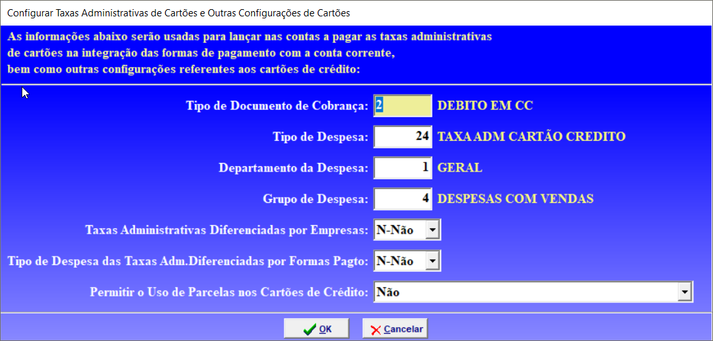
As informações configuradas aqui são usadas para lançar automaticamente as taxas administrativas de cartões nas contas a pagar, integradas às formas de pagamento via conta corrente.
| Campo | Padrão | Descrição / Orientação de Suporte |
|---|---|---|
|
Tipo de Documento de Cobrança
|
Texto | Código e descrição do tipo de documento usado para cobrar a taxa (ex.: 2 — DÉBITO EM CC). Deve corresponder a um tipo de documento cadastrado no financeiro. |
|
Tipo de Despesa
|
Texto | Código e descrição do tipo de despesa que classifica a taxa administrativa (ex.: 24 — TAXA ADM CARTÃO CRÉDITO). Utilizado para categorizar o lançamento no plano de contas. |
|
Departamento da Despesa
|
Texto | Código e nome do departamento ao qual a despesa de taxa será atribuída (ex.: 1 — GERAL). Deve existir no cadastro de departamentos. |
|
Grupo de Despesa
|
Texto | Código e nome do grupo de despesa para classificação contábil (ex.: 4 — DESPESAS COM VENDAS). Utilizado junto com o tipo de despesa para categorização no financeiro. |
|
Taxas Administrativas Diferenciadas por Empresas
|
N-Não | Quando S-Sim, permite definir taxas administrativas distintas para cada empresa do grupo. Ativar somente em ambientes multi-empresa onde as taxas negociadas com as operadoras diferem entre filiais. |
|
Tipo de Despesa das Taxas Adm. Diferenciadas por Formas Pagto
|
N-Não | Quando S-Sim, cada forma de pagamento pode ter um tipo de despesa diferente para as taxas administrativas. Útil quando o cliente precisa separar contabilmente as taxas de débito, crédito, voucher etc. |
|
Permitir o Uso de Parcelas nos Cartões de Crédito
|
Não | Quando ativado, habilita o parcelamento de vendas nos cartões de crédito. Ao ativar, o sistema passa a registrar cada parcela individualmente para controle das taxas e recebimentos. |
Cadastro Rápido de Clientes
Define quais campos são exibidos e obrigatórios na tela de cadastro rápido de clientes.
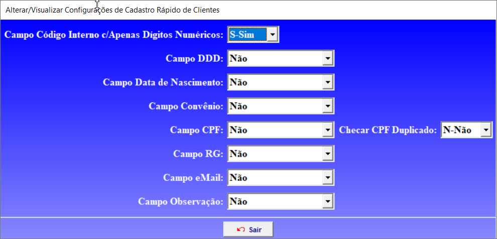
| Campo | Padrão | Descrição / Orientação de Suporte |
|---|---|---|
|
Campo Código Interno c/Apenas Dígitos Numéricos
|
S-Sim | Quando S-Sim, o código interno do cliente aceita apenas dígitos numéricos, evitando letras ou caracteres especiais. Recomendado para manter consistência na numeração de clientes. |
|
Campo DDD
|
N-Não | Quando S-Sim, exibe o campo de DDD separado do telefone no cadastro rápido. Ativar quando o cliente opera em mais de uma região e precisa registrar DDDs distintos. |
|
Campo Data de Nascimento
|
N-Não | Quando S-Sim, exibe o campo de data de nascimento no cadastro rápido. Útil para clientes que usam aniversário como critério de benefício ou programa de fidelidade. |
|
Campo Convênio
|
N-Não | Quando S-Sim, exibe o campo de convênio no cadastro rápido, permitindo vincular o cliente a um convênio já no momento do cadastro. |
|
Campo CPF
|
N-Não | Quando S-Sim, exibe o campo de CPF no cadastro rápido. Habilitar junto com "Checar CPF Duplicado" para evitar duplicidade de cadastros. |
|
Checar CPF Duplicado
|
N-Não | Quando S-Sim, o sistema verifica se o CPF informado já existe em outro cadastro antes de salvar. Depende do campo CPF estar habilitado. Ativar para evitar clientes duplicados. |
|
Campo RG
|
N-Não | Quando S-Sim, exibe o campo de RG no cadastro rápido. Ativar quando o negócio exige identificação por documento de identidade. |
|
Campo eMail
|
N-Não | Quando S-Sim, exibe o campo de e-mail no cadastro rápido. Recomendado para clientes que utilizam envio de cupom fiscal ou comunicação por e-mail. |
|
Campo Observação
|
N-Não | Quando S-Sim, exibe o campo de observação livre no cadastro rápido, permitindo registrar informações adicionais sobre o cliente no momento do cadastro. |
Produtos de Apoio
Define quais produtos especiais (taxa de serviço, entrega, couvert, consumação mínima) são utilizados e quais itens do cadastro os representam.
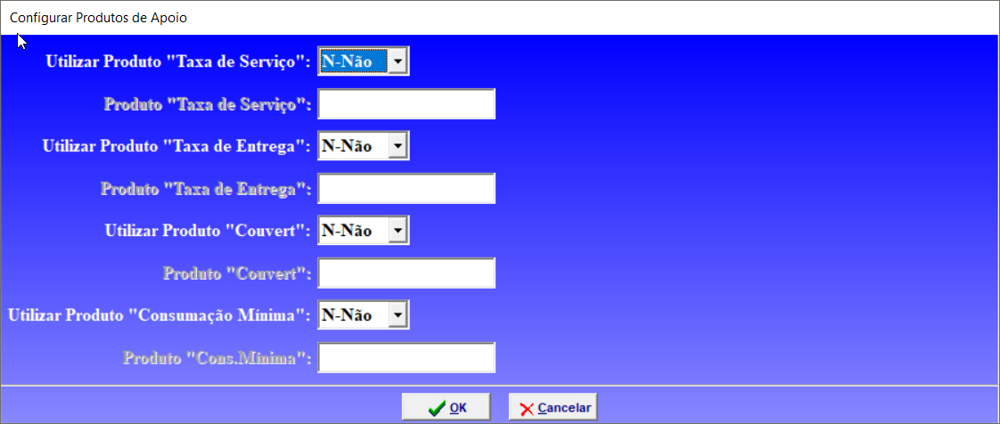
| Campo | Padrão | Descrição / Orientação de Suporte |
|---|---|---|
|
Utilizar Produto "Taxa de Serviço"
|
N-Não | Quando S-Sim, habilita a cobrança automática de taxa de serviço nos pedidos. Requer que o campo Produto "Taxa de Serviço" esteja preenchido com o produto correspondente. |
|
Produto "Taxa de Serviço"
|
Texto | Informe o código ou nome do produto cadastrado que representa a taxa de serviço. Só tem efeito quando o campo Utilizar estiver como S-Sim. |
|
Utilizar Produto "Taxa de Entrega"
|
N-Não | Quando S-Sim, habilita a cobrança de taxa de entrega nos pedidos de delivery. Requer o produto correspondente informado abaixo. |
|
Produto "Taxa de Entrega"
|
Texto | Informe o código ou nome do produto que representa a taxa de entrega. Utilizado para lançar automaticamente o valor de frete no pedido. |
|
Utilizar Produto "Couvert"
|
N-Não | Quando S-Sim, habilita a cobrança automática de couvert artístico nos pedidos. Requer o produto correspondente informado abaixo. |
|
Produto "Couvert"
|
Texto | Informe o código ou nome do produto que representa o couvert. O sistema lançará este produto automaticamente ao abrir uma comanda, conforme regras configuradas. |
|
Utilizar Produto "Consumação Mínima"
|
N-Não | Quando S-Sim, habilita o controle de consumação mínima por cliente/mesa. Requer o produto correspondente informado abaixo. |
|
Produto "Cons.Mínima"
|
Texto | Informe o código ou nome do produto que representa a consumação mínima. Utilizado para lançar automaticamente o valor mínimo exigido por pessoa ou mesa. |
Produtos p/ Cálculo de Nº de Pessoas
Define quais produtos, quando lançados na comanda, são considerados para calcular automaticamente o número de pessoas no fechamento da conta.
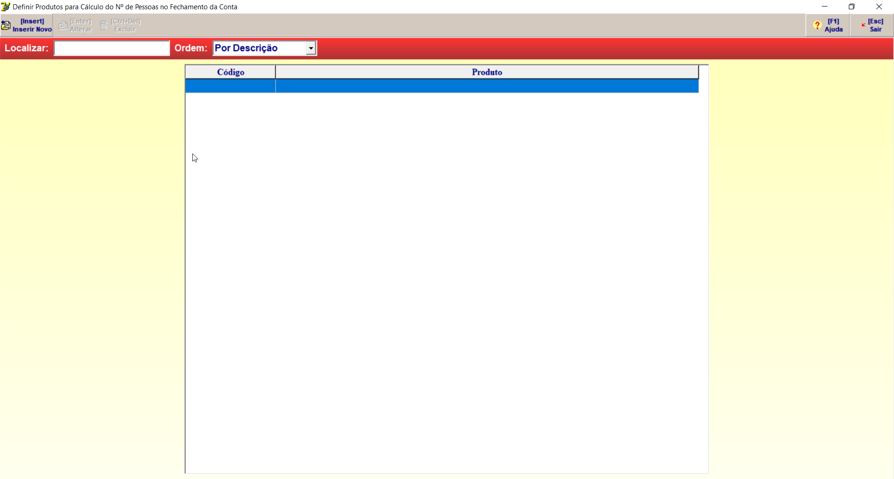
Use [Insert] Inserir Novo para adicionar um produto à lista, [Enter] Alterar para editar e [Ctrl+Del] Excluir para remover. O sistema usará esses produtos como referência para contabilizar automaticamente o número de pessoas ao fechar a conta.
| Campo | Tipo | Descrição / Orientação de Suporte |
|---|---|---|
|
Código
|
Texto | Código interno do produto cadastrado no sistema. Gerado automaticamente ao inserir. |
|
Produto
|
Texto | Nome/descrição do produto que será contabilizado como "uma pessoa" no fechamento da conta. Informe produtos individuais por pessoa (ex.: prato executivo, entrada individual) para que o cálculo seja preciso. |
Dados de C.Pagar p/ NF de Compra
Define os parâmetros usados para lançar automaticamente as contas a pagar ao importar notas fiscais de compra pelo XML.
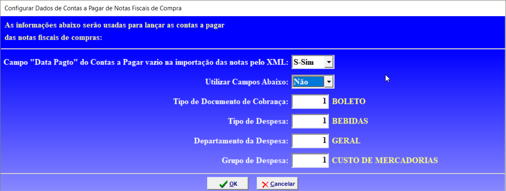
Os campos de código (Tipo de Documento, Tipo de Despesa, Departamento e Grupo) aceitam o número do registro cadastrado no sistema — o nome correspondente é exibido ao lado após a confirmação. O campo Utilizar Campos Abaixo habilita ou desabilita o preenchimento automático dos demais campos no lançamento da NF.
| Campo | Tipo | Descrição / Orientação de Suporte |
|---|---|---|
Campo "Data Pagto" do C.Pagar vazio na importação pelo XML |
Seleção | Define se o campo Data Pagto do contas a pagar deve ficar em branco ao importar a nota pelo XML. S-Sim = campo vazio (pagamento não agendado); N-Não = preenche com a data de vencimento da NF. |
Utilizar Campos Abaixo |
Seleção | Habilita (Sim) ou desabilita (Não) o preenchimento automático dos campos de Tipo de Documento, Tipo de Despesa, Departamento e Grupo ao lançar a NF de compra. Quando Não, o sistema não aplica os valores configurados abaixo. |
Tipo de Documento de Cobrança |
Texto | Código do tipo de documento de cobrança a ser associado ao lançamento (ex.: 1 – BOLETO). Informe o código cadastrado em Financeiro › Tipos de Documento. |
Tipo de Despesa |
Texto | Código do tipo de despesa para classificação do lançamento (ex.: 1 – BEBIDAS). Informe o código cadastrado no plano de despesas do financeiro. |
Departamento da Despesa |
Texto | Código do departamento ao qual a despesa será atribuída (ex.: 1 – GERAL). Utilizado para relatórios de custos por centro de custo. |
Grupo de Despesa |
Texto | Código do grupo de despesa para agrupamento contábil do lançamento (ex.: 1 – CUSTO DE MERCADORIAS). Reflete o plano de contas configurado no financeiro. |
Sistema de Backup
Configura se este computador atuará como servidor de backup e define a senha de acesso remoto.
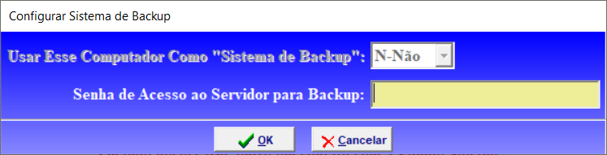
| Campo | Tipo | Descrição / Orientação de Suporte |
|---|---|---|
Usar Esse Computador Como "Sistema de Backup" |
Seleção | Define se este computador atuará como servidor de backup do sistema. S-Sim = habilita a função de backup neste equipamento; N-Não = desabilita. |
Senha de Acesso ao Servidor para Backup |
Texto | Senha utilizada para autenticar o acesso remoto ao servidor de backup. Deve ser definida quando o campo acima estiver como S-Sim. |
Sistema de Gestão Remoto
Define o endereço IP e a porta de comunicação do servidor para acesso remoto ao sistema.
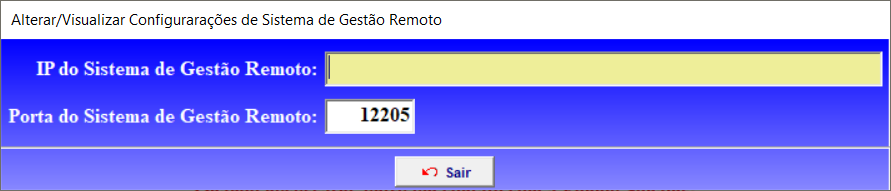
| Campo | Tipo | Descrição / Orientação de Suporte |
|---|---|---|
IP do Sistema de Gestão Remoto |
Texto | Endereço IP do servidor onde o sistema de gestão remoto está instalado (ex.: 192.168.1.100). Deixe em branco se o recurso não for utilizado. |
Porta do Sistema de Gestão Remoto |
Texto | Porta de comunicação utilizada para conexão com o servidor remoto. Valor padrão do sistema: 12205. Alterar somente se orientado pelo suporte técnico. |
Sagres RestServer
Configura a lógica de autenticação e os tempos de expiração de sessão do servidor REST do Sagres.
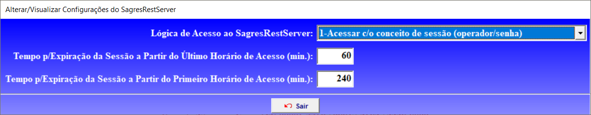
| Campo | Tipo | Descrição / Orientação de Suporte |
|---|---|---|
Lógica de Acesso ao SagresRestServer |
Seleção | Define o modelo de autenticação utilizado pelo RestServer. A opção 1-Acessar c/o conceito de sessão (operador/senha) exige que cada acesso seja autenticado com operador e senha, criando uma sessão temporária. |
Tempo p/Expiração da Sessão a Partir do Último Horário de Acesso (min.) |
Texto | Tempo em minutos de inatividade após o qual a sessão expira automaticamente. Valor padrão: 60. O contador é reiniciado a cada acesso realizado. |
Tempo p/Expiração da Sessão a Partir do Primeiro Horário de Acesso (min.) |
Texto | Tempo máximo em minutos que uma sessão pode permanecer ativa desde o primeiro acesso, independentemente de atividade. Valor padrão: 240. |
Senha Via Internet (Sistema Gestão)
Cadastro das credenciais do representante para acesso e autenticação do sistema via internet.
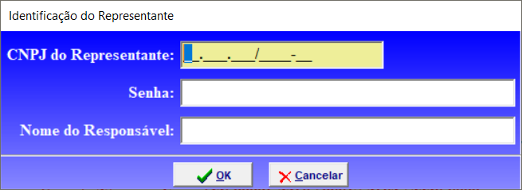
| Campo | Tipo | Descrição / Orientação de Suporte |
|---|---|---|
CNPJ do Representante |
Texto | CNPJ do representante autorizado a acessar o sistema via internet. Informe no formato XX.XXX.XXX/XXXX-XX. |
Senha |
Texto | Senha de acesso do representante para autenticação no sistema via internet. |
Nome do Responsável |
Texto | Nome completo do responsável vinculado ao CNPJ do representante. |
Otimizar Velocidade do Sistema
Define o tipo de otimização de velocidade de acesso aos dados do sistema de gestão.
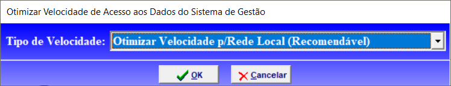
| Campo | Tipo | Descrição / Orientação de Suporte |
|---|---|---|
Tipo de Velocidade |
Seleção | Define o modo de otimização de acesso aos dados. A opção recomendada é Otimizar Velocidade p/Rede Local, indicada para ambientes com rede local estruturada. |
Locais de Impressão
Define se o sistema utilizará locais de impressão vinculados aos produtos e qual o modo de operação.
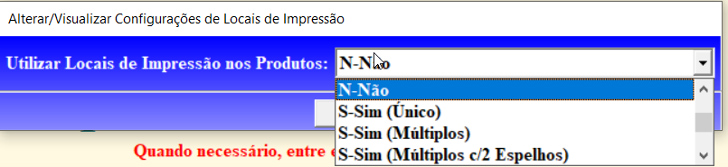
| Campo | Tipo | Descrição / Orientação de Suporte |
|---|---|---|
Utilizar Locais de Impressão nos Produtos |
Seleção |
Define se o sistema utilizará locais de impressão associados aos produtos e qual o modo: N-Não — recurso desabilitado; S-Sim (Único) — cada produto possui um único local de impressão; S-Sim (Múltiplos) — cada produto pode ter mais de um local de impressão; S-Sim (Múltiplos c/2 Espelhos) — múltiplos locais com impressão espelhada em duas impressoras simultâneas. |
Definir Local de Impressão Padrão
Define qual local de impressão será usado como padrão neste computador específico.
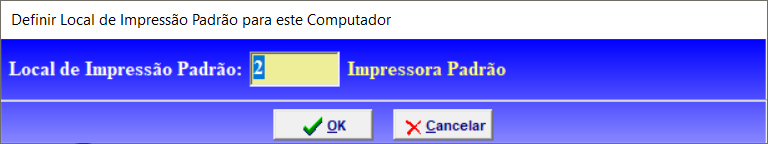
Esta configuração é por estação — cada computador pode ter um local de impressão padrão diferente.
| Campo | Tipo | Descrição / Orientação de Suporte |
|---|---|---|
Local de Impressão Padrão |
Texto | Código do local de impressão a ser usado como padrão neste computador. O nome da impressora correspondente é exibido ao lado após a confirmação (ex.: 2 — Impressora Padrão). Os locais disponíveis são cadastrados em Configurações › Locais de Impressão. |
Envio de XMLs por Email para a Contabilidade
Configura o envio automático dos arquivos XML das notas fiscais para o contador via e-mail.
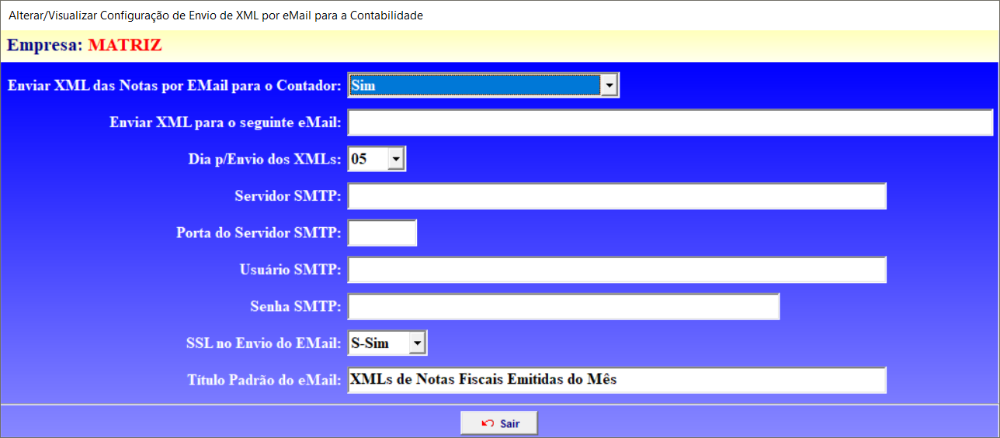
• Enviar XML para o seguinte eMail — e-mail do contador (ex.: contador@escritorio.com.br)
• Título Padrão do eMail — assunto do e-mail (ex.: XMLs da Empresa XPTO do Mês)
| Campo | Tipo | Descrição / Orientação de Suporte |
|---|---|---|
Enviar XML das Notas por EMail para o Contador |
Seleção | Habilita (Sim) ou desabilita (Não) o envio automático dos arquivos XML das notas fiscais para o e-mail do contador. |
Enviar XML para o seguinte eMail |
Texto | Endereço de e-mail do contador ou da contabilidade que receberá os XMLs. Informe um e-mail válido. |
Dia p/Envio dos XMLs |
Seleção | Dia do mês em que o sistema realizará o envio automático dos XMLs. Selecione o dia desejado na lista. |
Servidor SMTP |
Texto | Endereço do servidor SMTP utilizado para envio do e-mail (ex.: smtp.gmail.com, smtp.office365.com). |
Porta do Servidor SMTP |
Texto | Porta de comunicação do servidor SMTP. Valores comuns: 587 (TLS), 465 (SSL), 25 (sem criptografia). |
Usuário SMTP |
Texto | Nome de usuário (geralmente o próprio endereço de e-mail) utilizado para autenticação no servidor SMTP. |
Senha SMTP |
Texto | Senha da conta de e-mail usada para autenticação no servidor SMTP. Em contas Google, pode ser necessária uma Senha de App. |
SSL no Envio do EMail |
Seleção | Define se a conexão com o servidor SMTP usará SSL. S-Sim = habilita SSL; N-Não = sem SSL. Use conforme exigência do provedor. |
Título Padrão do eMail |
Texto | Assunto padrão do e-mail enviado ao contador (ex.: XMLs de Notas Fiscais Emitidas do Mês). Pode ser personalizado conforme preferência. |
Envio de XMLs por Email — Outras Opções
Parâmetro complementar para a gravação dos arquivos XML enviados por e-mail à contabilidade.
| Campo | Tipo | Descrição / Orientação de Suporte |
|---|---|---|
Incluir Relatório de Produtos Totalizados por CFOP na Gravação dos Arquivos XML |
Seleção | Define se um relatório com os produtos totalizados por CFOP será gerado e incluído junto aos arquivos XML gravados. S-Sim = inclui o relatório; N-Não = não inclui. |
Fiscal / NF-e / NFC-e / SAT
Configurações de emissão de documentos fiscais eletrônicos.
PDV / Caixa
Parâmetros de ponto de venda, abertura e fechamento de caixa.
Usuários e Permissões
Cadastro de operadores, perfis de acesso e controle de permissões.
Cadastro de Empresas
Cadastro das empresas do sistema. Define dados de identificação, endereço, contato, parâmetros fiscais e horários de operação.
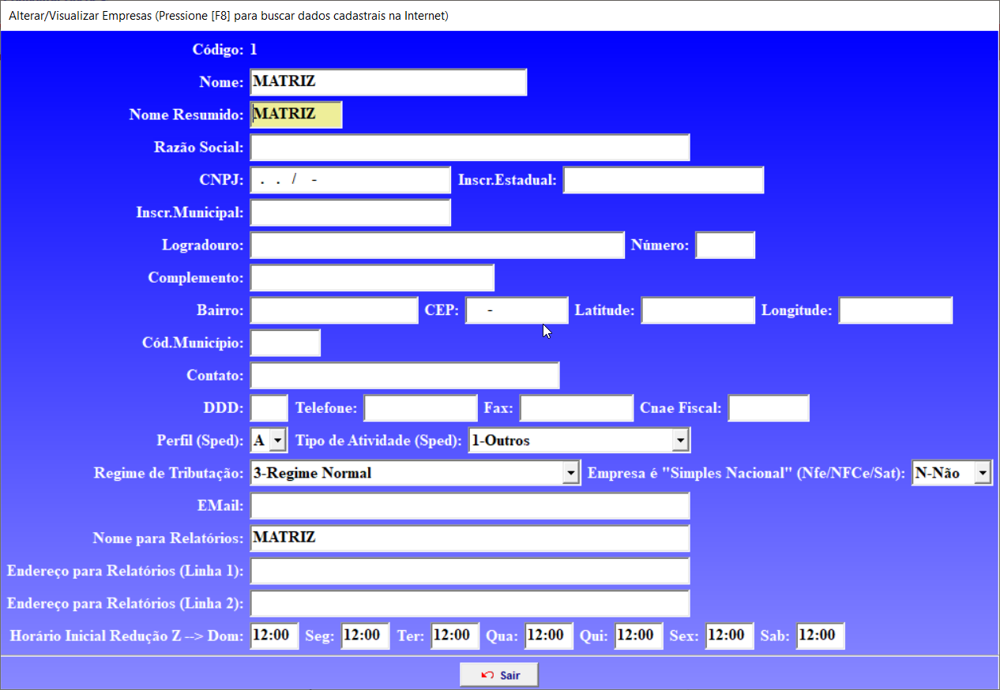
| Campo | Tipo | Descrição / Orientação de Suporte |
|---|---|---|
Nome |
Texto | Nome fantasia da empresa, utilizado nas telas operacionais do sistema. |
Nome Resumido |
Texto | Versão abreviada do nome da empresa para exibição em espaços reduzidos. |
Razão Social |
Texto | Razão social completa conforme registro na Receita Federal. |
CNPJ |
Texto | CNPJ da empresa no formato XX.XXX.XXX/XXXX-XX. Utilizado na emissão de documentos fiscais. |
Inscr.Estadual |
Texto | Inscrição Estadual da empresa. |
Inscr.Municipal |
Texto | Inscrição Municipal da empresa. |
Cnae Fiscal |
Texto | Código CNAE (Classificação Nacional de Atividades Econômicas) da empresa. |
| Campo | Tipo | Descrição / Orientação de Suporte |
|---|---|---|
Logradouro |
Texto | Rua, avenida ou logradouro do endereço da empresa. |
Número |
Texto | Número do endereço. |
Complemento |
Texto | Complemento do endereço (sala, loja, andar etc.). |
Bairro |
Texto | Bairro do endereço da empresa. |
CEP |
Texto | Código de Endereçamento Postal. |
Latitude |
Texto | Coordenada geográfica de latitude (uso opcional). |
Longitude |
Texto | Coordenada geográfica de longitude (uso opcional). |
Cód.Município |
Texto | Código IBGE do município, utilizado na emissão de NF-e e NFC-e. |
| Campo | Tipo | Descrição / Orientação de Suporte |
|---|---|---|
Contato |
Texto | Nome da pessoa de contato na empresa. |
DDD |
Texto | Código DDD do telefone principal. |
Telefone |
Texto | Número do telefone principal da empresa. |
Fax |
Texto | Número do fax (se utilizado). |
EMail |
Texto | Endereço de e-mail da empresa, podendo ser utilizado em envios automáticos do sistema. |
| Campo | Tipo | Descrição / Orientação de Suporte |
|---|---|---|
Perfil (Sped) |
Seleção | Perfil SPED da empresa para geração dos arquivos contábeis e fiscais. |
Tipo de Atividade (Sped) |
Seleção | Tipo de atividade econômica para fins de SPED Fiscal. |
Regime de Tributação |
Seleção | Define o regime tributário da empresa: Lucro Real, Lucro Presumido, Simples Nacional etc. Impacta o cálculo de impostos nas notas fiscais. |
Empresa é "Simples Nacional" (Nfe/NFCe/Sat) |
Seleção | Indica se a empresa é optante pelo Simples Nacional para fins de emissão de NF-e, NFC-e e SAT. |
| Campo | Tipo | Descrição / Orientação de Suporte |
|---|---|---|
Nome para Relatórios |
Texto | Nome da empresa que será impresso no cabeçalho dos relatórios. |
Endereço para Relatórios (Linha 1) |
Texto | Primeira linha do endereço exibido no cabeçalho dos relatórios. |
Endereço para Relatórios (Linha 2) |
Texto | Segunda linha do endereço exibido no cabeçalho dos relatórios. |
| Campo | Tipo | Descrição / Orientação de Suporte |
|---|---|---|
Horário Inicial Redução Z |
Texto | Define o horário inicial da Redução Z para cada dia da semana (Dom, Seg, Ter, Qua, Qui, Sex, Sab). Utilizado para controle dos fechamentos de caixa. |
Opções Gerais da Empresa
Parâmetros operacionais da empresa: senha do painel, sincronização, cancelamentos, módulos de NF e compatibilidade de terminais.
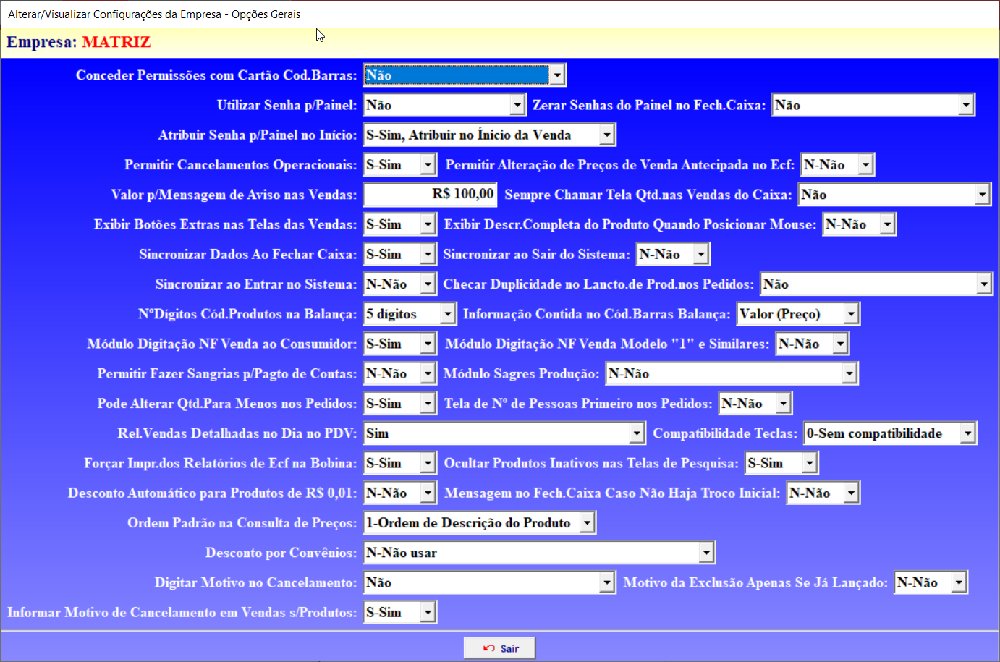
| Campo | Padrão | Descrição / Orientação de Suporte |
|---|---|---|
Conceder Permissões com Cartão Cod.Barras |
Não | Quando ativo, exige o uso do cartão de código de barras para conceder permissões e autorizar operações restritas no PDV. |
Utilizar Senha p/Painel |
Não | Define se o sistema exige senha para acesso ao painel de configurações da empresa. |
Zerar Senhas do Painel no Fech.Caixa |
Não | Quando ativo, a senha do painel é zerada automaticamente ao fechar o caixa, forçando nova atribuição no próximo acesso. |
Atribuir Senha p/Painel no Início |
S-Sim, Atribuir no Início da Venda | Define o momento em que a senha do painel é atribuída. S-Sim, Atribuir no Início da Venda: senha definida a cada nova venda. Outras opções configuram a atribuição ao iniciar o sistema. |
| Campo | Padrão | Descrição / Orientação de Suporte |
|---|---|---|
Permitir Cancelamentos Operacionais |
S-Sim | Habilita o cancelamento operacional de lançamentos pelo operador no PDV, sem necessidade de autorização gerencial. |
Permitir Alteração de Preços de Venda Antecipada no Ecf |
N-Não | Permite que o operador altere o preço de uma venda antecipada diretamente no ECF. Manter N-Não para preservar os preços pré-acordados. |
Digitar Motivo no Cancelamento |
Não | Define se é obrigatório digitar o motivo ao realizar um cancelamento. Ativar para reforçar controle e auditoria de cancelamentos. |
Motivo da Exclusão Apenas Se Já Lançado |
N-Não | Quando S-Sim, o campo de motivo da exclusão só é exigido se o item já tiver sido lançado/impresso, dispensando o preenchimento em cancelamentos antes do lançamento. |
Informar Motivo de Cancelamento em Vendas s/Produtos |
S-Sim | Quando S-Sim, exige a informação do motivo ao cancelar produtos em vendas. Recomendado para estabelecimentos com controle rigoroso de cancelamentos. |
| Campo | Padrão | Descrição / Orientação de Suporte |
|---|---|---|
Valor p/Mensagem de Aviso nas Vendas |
Valor | Valor monetário de referência (ex.: R$ 100,00) que, ao ser atingido em uma venda, dispara uma mensagem de aviso para o operador. |
Sempre Chamar Tela Qtd.nas Vendas do Caixa |
Não | Quando ativo, o sistema sempre exibe a tela de digitação de quantidade ao lançar um produto nas vendas do caixa, independentemente de qualquer quantidade pré-definida. |
Exibir Botões Extras nas Telas das Vendas |
S-Sim | Quando S-Sim, exibe botões adicionais nas telas de venda (atalhos para funções complementares). Desativar em ambientes onde a tela precisa ser mais limpa. |
Exibir Descr.Completa do Produto Quando Posicionar Mouse |
N-Não | Quando S-Sim, ao posicionar o mouse sobre um produto na tela de vendas, o sistema exibe a descrição completa do item em um tooltip. Útil para produtos com nomes resumidos na grade. |
Pode Alterar Qtd.Para Menos nos Pedidos |
S-Sim | Quando S-Sim, permite que o operador reduza a quantidade de itens já lançados nos pedidos. Desativar (N-Não) para impedir manipulação de pedidos em andamento. |
Tela de Nº de Pessoas Primeiro nos Pedidos |
N-Não | Quando S-Sim, ao abrir um pedido o sistema exibe primeiro a tela de informação do número de pessoas antes de permitir o lançamento de itens. Útil para controle de consumo per capita. |
| Campo | Padrão | Descrição / Orientação de Suporte |
|---|---|---|
Sincronizar Dados Ao Fechar Caixa |
S-Sim | Executa sincronização automática de dados com o servidor ao fechar o caixa. Manter S-Sim em ambientes multi-estação para garantir consistência dos dados. |
Sincronizar ao Sair do Sistema |
N-Não | Define se a sincronização é executada automaticamente ao encerrar o sistema. Útil para garantir que todos os dados do dia sejam enviados ao servidor antes do fechamento. |
Sincronizar ao Entrar no Sistema |
N-Não | Quando S-Sim, executa sincronização automática ao iniciar o sistema, garantindo que o terminal inicie com os dados mais atualizados do servidor. |
Checar Duplicidade no Lancto.de Prod.nos Pedidos |
Não | Quando ativo, o sistema verifica se um produto já foi lançado no pedido antes de adicioná-lo novamente, alertando o operador sobre possível duplicidade de itens. |
| Campo | Padrão | Descrição / Orientação de Suporte |
|---|---|---|
Nº Dígitos Côd.Produtos na Balança |
5 dígitos | Define o número de dígitos reservados para o código do produto no código de barras gerado pela balança. Configurar conforme o padrão da balança instalada. |
Informação Contida no Côd.Barras Balança |
Valor (Preço) | Define se o código de barras da balança contém o Valor (Preço) ou o Peso do produto. Configurar conforme o modelo de balança utilizado no estabelecimento. |
| Campo | Padrão | Descrição / Orientação de Suporte |
|---|---|---|
Módulo Digitação NF Venda ao Consumidor |
S-Sim | Habilita o módulo de digitação de NF de venda ao consumidor (NFC-e/SAT). Deve estar S-Sim em estabelecimentos que emitem NFC-e ou utilizam SAT fiscal. |
Módulo Digitação NF Venda Modelo "1" e Similares |
N-Não | Habilita o módulo Modelo 1 e similares para digitação de NF de venda. Ativar somente se o estabelecimento operar com esse modelo específico de faturamento. |
Permitir Fazer Sangrias p/Pagto de Contas |
N-Não | Quando ativo, permite realizar sangrias de caixa vinculadas ao pagamento de contas. Usar somente quando o fluxo operacional do estabelecimento exigir esse tipo de sangria. |
Módulo Sagres Produção |
N-Não | Ativa o módulo Sagres Produção. Habilitar somente se o estabelecimento utiliza o módulo de produção integrado ao Squalus e possui este módulo contratado. |
| Campo | Padrão | Descrição / Orientação de Suporte |
|---|---|---|
Rel.Vendas Detalhadas no Dia no PDV |
Sim | Define se o relatório de vendas detalhadas do dia é exibido nos terminais PDV. Manter ativo para que os operadores possam consultar o movimento do dia diretamente no caixa. |
Compatibilidade Teclas |
0-Sem compatibilidade | Define o modo de compatibilidade do teclado com o PDV. 0-Sem compatibilidade: teclado padrão sem ajustes. Alterar apenas se o PDV apresentar problemas de resposta ao teclado. |
Forçar Impr.dos Relatórios de Ecf na Bobina |
S-Sim | Quando S-Sim, força a reimpressão dos relatórios do ECF diretamente na bobina ao reiniciar o sistema. Usar quando houver perda de relatórios de fechamento após reinicialização do terminal. |
Ocultar Produtos Inativos nas Telas de Pesquisa |
S-Sim | Quando S-Sim, produtos marcados como inativos não aparecem nas pesquisas do PDV e do sistema. Manter S-Sim para evitar que operadores vendam produtos fora de linha. |
| Campo | Padrão | Descrição / Orientação de Suporte |
|---|---|---|
Desconto Automático para Produtos de R$ 0,01 |
N-Não | Quando S-Sim, aplica desconto automático para produtos com valor de R$ 0,01 (itens gratuitos ou brindes). Ativar somente se o estabelecimento utilizar esse recurso de precificação. |
Ordem Padrão na Consulta de Preços |
1-Ordem de Descrição do Produto | Define a ordem de exibição dos produtos na consulta de preços. 1-Ordem de Descrição do Produto: lista em ordem alfabética pela descrição. Outras opções organizam por código ou preço. |
Desconto por Convênios |
N-Não usar | Configura o uso de descontos vinculados a convênios empresariais. N-Não usar: desativa o módulo de convênios. Ativar somente se o estabelecimento opera com descontos por convênio. |
| Campo | Padrão | Descrição / Orientação de Suporte |
|---|---|---|
Mensagem no Fech.Caixa Caso Não Haja Troco Inicial |
N-Não | Quando S-Sim, exibe uma mensagem de alerta no fechamento de caixa quando não há valor de troco inicial configurado para o próximo turno. Auxilia o controle de abertura de caixa. |
Opções Gerais da Empresa 2
Configurações de caixa, troco, ECF, sangria, pedidos, fiscal, SMS e exportação de arquivos.
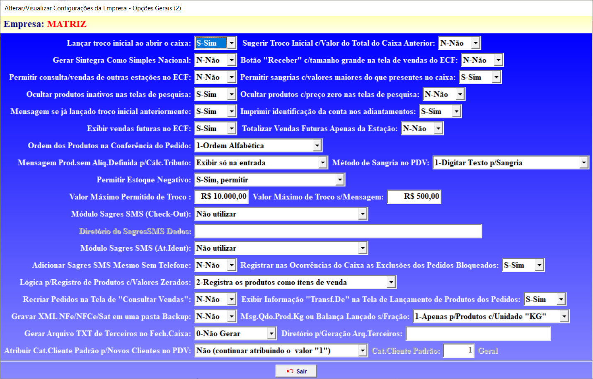
| Campo | Padrão | Descrição / Orientação de Suporte |
|---|---|---|
Lançar troco inicial ao abrir o caixa |
S-Sim | Quando S-Sim, o sistema solicita o lançamento do troco inicial ao abrir o caixa. Manter S-Sim para garantir o controle de fundo de caixa desde o início do turno. |
Sugerir Troco Inicial c/Valor do Total do Caixa Anterior |
N-Não | Quando S-Sim, o sistema pré-preenche o campo de troco inicial com o valor total do fechamento do caixa anterior, agilizando a abertura do próximo turno. |
Mensagem se já lançado troco inicial anteriormente |
S-Sim | Quando S-Sim, o sistema exibe uma mensagem de aviso caso o operador tente lançar o troco inicial mais de uma vez no mesmo turno, evitando duplicidade. |
Valor Máximo Permitido de Troco |
R$ 10.000,00 | Define o valor máximo que pode ser concedido como troco em uma venda. Vendas cujo troco exceda esse limite são bloqueadas ou alertadas pelo sistema. |
Valor Máximo de Troco s/Mensagem |
R$ 500,00 | Define o valor de troco acima do qual o sistema exibe uma mensagem de confirmação ao operador antes de prosseguir. Auxilia no controle de trocos elevados. |
| Campo | Padrão | Descrição / Orientação de Suporte |
|---|---|---|
Botão "Receber" c/tamanho grande na tela de vendas do ECF |
N-Não | Quando S-Sim, o botão "Receber" é exibido em tamanho maior na tela de vendas do ECF, facilitando o uso em telas sensíveis ao toque ou ambientes com operação rápida. |
Permitir consulta/vendas de outras estações no ECF |
N-Não | Quando S-Sim, permite que uma estação ECF consulte ou processe vendas originadas em outras estações. Ativar somente em ambientes com operação multi-caixa integrada. |
Permitir sangrias c/valores maiores do que apresenta no caixa |
S-Sim | Quando S-Sim, permite realizar sangrias com valor superior ao saldo atual do caixa. Manter N-Não para evitar saldo negativo não intencional. |
Exibir vendas futuras no ECF |
S-Sim | Quando S-Sim, o ECF exibe as vendas antecipadas (futuras) junto com as vendas do dia, permitindo ao operador visualizar e processar esse tipo de venda diretamente no caixa. |
Totalizar Vendas Futuras Apenas da Estação |
N-Não | Quando S-Sim, o totalizador de vendas futuras no ECF exibe apenas as vendas vinculadas à estação atual, ignorando vendas futuras de outros caixas/estações. |
| Campo | Padrão | Descrição / Orientação de Suporte |
|---|---|---|
Ocultar produtos inativos nas telas de pesquisa |
S-Sim | Quando S-Sim, produtos marcados como inativos não aparecem nas pesquisas desta tela. Manter S-Sim para evitar que operadores selecionem produtos fora de linha. |
Ocultar produtos c/preço zero nas telas de pesquisa |
N-Não | Quando S-Sim, produtos com preço de venda zerado são ocultados nas pesquisas. Útil para remover da listagem itens não precificados que não devem ser vendidos. |
Permitir Estoque Negativo |
S-Sim, permitir | Define o comportamento do sistema quando o estoque de um produto chega a zero. S-Sim, permitir: permite lançar vendas mesmo sem estoque. Configurar conforme a política do estabelecimento. |
Mensagem Prod.sem Aliq.Definida p/Cálc.Tributo |
Exibir só na entrada | Define quando o sistema exibe aviso para produtos sem alíquota definida para cálculo tributário. Exibir só na entrada: alerta apenas ao lançar entrada de estoque. Ajustar conforme necessidade fiscal. |
| Campo | Padrão | Descrição / Orientação de Suporte |
|---|---|---|
Imprimir identificação da conta nos adiantamentos |
S-Sim | Quando S-Sim, o número/identificação da conta é impresso nos comprovantes de adiantamento, facilitando a conciliação entre o comprovante e o pedido correspondente. |
Ordem dos Produtos na Conferência do Pedido |
1-Ordem Alfabética | Define a ordenação dos produtos exibidos na tela de conferência do pedido. 1-Ordem Alfabética: lista em ordem alfabética pela descrição do produto. |
Recriar Pedidos na Tela de "Consultar Vendas" |
N-Não | Quando S-Sim, permite recriar um pedido a partir da tela de consulta de vendas. Útil para reprocessar pedidos cancelados ou com erro, sem necessidade de redigitação manual. |
Exibir Informação "Transf.De" na Tela de Lançamento de Produtos dos Pedidos |
S-Sim | Quando S-Sim, exibe o campo "Transferido de" na tela de lançamento de produtos dos pedidos, indicando a origem de itens transferidos entre pedidos ou mesas. |
| Campo | Padrão | Descrição / Orientação de Suporte |
|---|---|---|
Método de Sangria no PDV |
1-Digitar Texto p/Sangria | Define como o operador informa o motivo da sangria no PDV. 1-Digitar Texto p/Sangria: o operador digita livremente o motivo. Outras opções podem usar listas pré-definidas. |
Lógica p/Registro de Produtos c/Valores Zerados |
2-Registra os produtos como itens de venda | Define como o sistema registra produtos com valor zerado nas vendas. 2-Registra os produtos como itens de venda: lança normalmente no cupom mesmo com valor R$ 0,00. |
| Campo | Padrão | Descrição / Orientação de Suporte |
|---|---|---|
Gerar Sintegra Como Simples Nacional |
N-Não | Quando S-Sim, o arquivo Sintegra é gerado seguindo as regras do Simples Nacional. Ativar somente para empresas optantes pelo Simples Nacional que precisam gerar o Sintegra. |
Gravar XML NFe/NFCe/Sat em uma pasta Backup |
N-Não | Quando S-Sim, cópias dos XMLs de NF-e, NFC-e e SAT são gravadas automaticamente em uma pasta de backup configurada no sistema. Recomendado para segurança dos documentos fiscais. |
| Campo | Padrão | Descrição / Orientação de Suporte |
|---|---|---|
Msg.Qdo.Prod.Kg ou Balança Lançado s/Fração |
1-Apenas p/Produtos c/Unidade "KG" | Define para quais produtos o sistema exibe mensagem ao lançar um item pesável sem fração de quantidade. 1-Apenas p/Produtos c/Unidade "KG": alerta somente para itens com unidade KG. |
| Campo | Padrão | Descrição / Orientação de Suporte |
|---|---|---|
Módulo Sagres SMS (Check-Out) |
Não utilizar | Define se o módulo Sagres SMS é ativado no momento do checkout (fechamento de venda). Não utilizar: SMS desativado. Ativar somente se o módulo de SMS estiver contratado. |
Diretório do SagresSMS Dados |
Caminho | Caminho da pasta onde o módulo SagresSMS armazena seus arquivos de dados. Preencher somente se o módulo de SMS estiver ativo e configurado na estação. |
Módulo Sagres SMS (At.Ident) |
Não utilizar | Define se o módulo Sagres SMS é ativado no atendimento de identificação do cliente. Não utilizar: SMS desativado neste ponto. Ativar somente se o módulo estiver contratado. |
Adicionar Sagres SMS Mesmo Sem Telefone |
N-Não | Quando S-Sim, o sistema tenta processar o envio de SMS mesmo para clientes sem telefone cadastrado. Manter N-Não para evitar erros de envio desnecessários. |
| Campo | Padrão | Descrição / Orientação de Suporte |
|---|---|---|
Registrar nas Ocorrências do Caixa as Exclusões dos Pedidos Bloqueados |
S-Sim | Quando S-Sim, toda exclusão de pedido bloqueado fica registrada no log de ocorrências do caixa, permitindo auditoria posterior dos cancelamentos de pedidos bloqueados. |
Atribuir Cat.Cliente Padrão p/Novos Clientes no PDV |
Não (continuar atribuindo o valor "1") | Define se o sistema atribui automaticamente uma categoria padrão a novos clientes cadastrados no PDV. Não (continuar atribuindo o valor "1"): mantém a categoria 1 como padrão. |
Cat.Cliente Padrão |
1 | Código da categoria de cliente atribuída automaticamente a novos clientes cadastrados no PDV. Alterar somente se o estabelecimento utilizar categorização de clientes personalizada. |
| Campo | Padrão | Descrição / Orientação de Suporte |
|---|---|---|
Gerar Arquivo TXT de Terceiros no Fech.Caixa |
0-Não Gerar | Define se o sistema gera um arquivo TXT para integração com sistemas de terceiros ao fechar o caixa. 0-Não Gerar: exportação desativada. Ativar somente se houver integração configurada. |
Diretório p/Geração Arq.Terceiros |
Caminho | Caminho da pasta onde o arquivo TXT de terceiros será gerado. Preencher somente quando a opção "Gerar Arquivo TXT de Terceiros no Fech.Caixa" estiver ativa. |
Opções Gerais da Empresa 3
Recebimento automático, horário de preparo, cancelamentos no fechamento de caixa, combo, dashboard e impressão na saída livre.
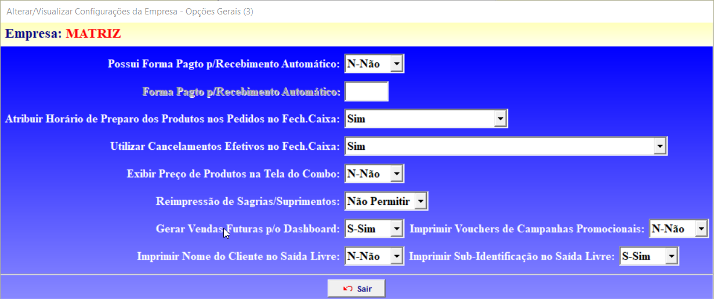
| Campo | Padrão | Descrição / Orientação de Suporte |
|---|---|---|
Possui Forma Pagto p/Recebimento Automático |
N-Não | Quando S-Sim, o sistema utiliza uma forma de pagamento padrão para processar recebimentos de forma automática. Ativar somente se o estabelecimento utilizar esse fluxo de recebimento. |
Forma Pagto p/Recebimento Automático |
— | Código da forma de pagamento utilizada no recebimento automático. Habilitado apenas quando "Possui Forma Pagto p/Recebimento Automático" estiver como S-Sim. |
| Campo | Padrão | Descrição / Orientação de Suporte |
|---|---|---|
Atribuir Horário de Preparo dos Produtos nos Pedidos no Fech.Caixa |
Sim | Quando Sim, o sistema registra o horário de preparo dos produtos dos pedidos no momento do fechamento de caixa. Manter Sim para garantir rastreabilidade do tempo de produção. |
Utilizar Cancelamentos Efetivos no Fech.Caixa |
Sim | Quando Sim, apenas os cancelamentos efetivamente confirmados são contabilizados no fechamento de caixa, evitando que cancelamentos parciais ou tentativas distorçam os totais. |
| Campo | Padrão | Descrição / Orientação de Suporte |
|---|---|---|
Exibir Preço de Produtos na Tela do Combo |
N-Não | Quando S-Sim, o preço de cada produto é exibido na tela de seleção de combos. Útil quando o cliente precisa visualizar os valores individuais dos itens do combo durante o atendimento. |
Reimpressão de Sagrias/Suprimentos |
Não Permitir | Define se o sistema permite reimprimir comprovantes de sangrias e suprimentos. Não Permitir: bloqueia a reimpressão. Ajustar conforme a política de controle do caixa do estabelecimento. |
| Campo | Padrão | Descrição / Orientação de Suporte |
|---|---|---|
Gerar Vendas Futuras p/o Dashboard |
S-Sim | Quando S-Sim, as vendas antecipadas (futuras) são incluídas nos totais exibidos no dashboard gerencial. Manter S-Sim para que os indicadores reflitam também os pedidos agendados. |
Imprimir Vouchers de Campanhas Promocionais |
N-Não | Quando S-Sim, o sistema imprime automaticamente vouchers de campanhas promocionais vinculadas à venda. Ativar somente se o estabelecimento utilizar campanhas com emissão de voucher físico. |
| Campo | Padrão | Descrição / Orientação de Suporte |
|---|---|---|
Imprimir Nome do Cliente no Saida Livre |
N-Não | Quando S-Sim, o nome do cliente identificado é impresso no comprovante de saída livre. Útil para ambientes que exigem identificação do cliente no documento de saída. |
Imprimir Sub-Identificação no Saida Livre |
S-Sim | Quando S-Sim, a sub-identificação (como número de mesa, comanda ou conta) é impressa no comprovante de saída livre, facilitando a conferência e o controle do atendimento. |
Opções de Cupom Fiscal / NFe / SAT
Configurações de impressão fiscal: cliente no cupom, gaveta, comprovantes, impostos, Danfe NFCe e CEST.
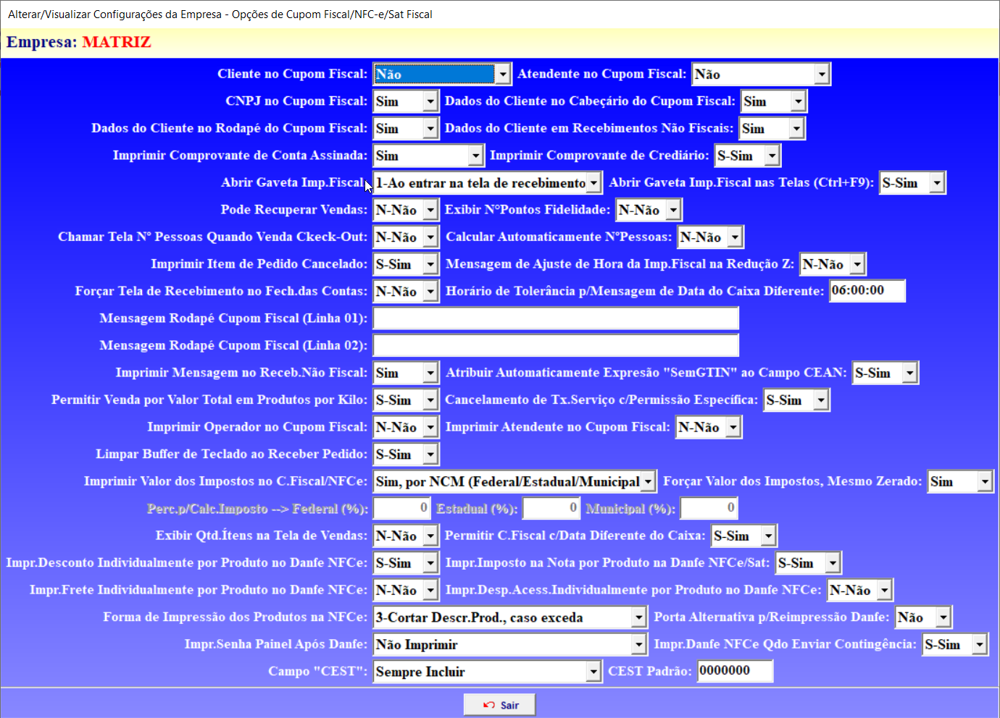
| Campo | Padrão | Descrição / Orientação de Suporte |
|---|---|---|
Cliente no Cupom Fiscal |
Não | Define se o nome do cliente é impresso no cupom fiscal. Ativar quando o estabelecimento precisar identificar o cliente no documento fiscal emitido. |
Atendente no Cupom Fiscal |
Não | Define se o nome do atendente responsável pela venda é impresso no cupom fiscal. |
CNPJ no Cupom Fiscal |
Sim | Quando Sim, o CNPJ do cliente é impresso no cupom fiscal. Recomendado para ambientes B2B onde o cliente solicita o CNPJ no documento. |
Dados do Cliente no Cabeçário do Cupom Fiscal |
Sim | Quando Sim, os dados do cliente identificado são impressos no cabeçalho do cupom fiscal. |
Dados do Cliente no Rodapé do Cupom Fiscal |
Sim | Quando Sim, os dados do cliente identificado são impressos no rodapé do cupom fiscal. |
Dados do Cliente em Recebimentos Não Fiscais |
Sim | Quando Sim, os dados do cliente são incluídos nos comprovantes de recebimentos não fiscais (ex.: conta assinada, crediário). |
| Campo | Padrão | Descrição / Orientação de Suporte |
|---|---|---|
Imprimir Comprovante de Conta Assinada |
Sim | Quando Sim, o sistema imprime automaticamente o comprovante ao registrar uma conta assinada. |
Imprimir Comprovante de Crediário |
S-Sim | Quando S-Sim, o sistema imprime automaticamente o comprovante ao registrar uma venda no crediário. |
| Campo | Padrão | Descrição / Orientação de Suporte |
|---|---|---|
Abrir Gaveta Imp.Fiscal |
1-Ao entrar na tela de recebimento | Define o momento em que a gaveta da impressora fiscal é aberta automaticamente. 1-Ao entrar na tela de recebimento: abre ao iniciar o processo de recebimento da venda. |
Abrir Gaveta Imp.Fiscal nas Telas (Ctrl+F9) |
S-Sim | Quando S-Sim, o atalho Ctrl+F9 abre manualmente a gaveta da impressora fiscal a partir de qualquer tela do sistema. |
| Campo | Padrão | Descrição / Orientação de Suporte |
|---|---|---|
Pode Recuperar Vendas |
N-Não | Quando S-Sim, permite recuperar vendas iniciadas e não finalizadas. Ativar somente em ambientes onde há interrupção frequente do fluxo de venda. |
Exibir NºPontos Fidelidade |
N-Não | Quando S-Sim, o saldo de pontos do programa de fidelidade do cliente é exibido durante o atendimento no caixa. |
Chamar Tela Nº Pessoas Quando Venda Ckeck-Out |
N-Não | Quando S-Sim, o sistema solicita a informação do número de pessoas ao finalizar uma venda via check-out. Útil para controle de cobertura em restaurantes. |
Calcular Automaticamente NºPessoas |
N-Não | Quando S-Sim, o sistema calcula automaticamente o número de pessoas com base nos produtos do pedido, sem necessidade de digitação manual. |
| Campo | Padrão | Descrição / Orientação de Suporte |
|---|---|---|
Imprimir Item de Pedido Cancelado |
S-Sim | Quando S-Sim, itens cancelados do pedido são impressos no cupom fiscal com indicação de cancelamento, mantendo rastreabilidade do que foi removido. |
Mensagem de Ajuste de Hora da Imp.Fiscal na Redução Z |
N-Não | Quando S-Sim, o sistema exibe uma mensagem orientando o ajuste do horário da impressora fiscal durante o processo de Redução Z. |
Forçar Tela de Recebimento no Fech.das Contas |
N-Não | Quando S-Sim, o sistema abre obrigatoriamente a tela de recebimento ao fechar contas, independentemente da configuração padrão do fluxo de caixa. |
Horário de Tolerância p/Mensagem de Data do Caixa Diferente |
06:00:00 | Define o horário limite até o qual o sistema não exibe aviso de data diferente no caixa. Útil para estabelecimentos que operam após meia-noite: caixas abertos antes deste horário são tratados como pertencentes ao dia anterior. |
Mensagem Rodapé Cupom Fiscal (Linha 01) |
— | Texto da primeira linha da mensagem personalizada impressa no rodapé do cupom fiscal. Deixar em branco para não imprimir mensagem. |
Mensagem Rodapé Cupom Fiscal (Linha 02) |
— | Texto da segunda linha da mensagem personalizada impressa no rodapé do cupom fiscal. Deixar em branco para não imprimir mensagem. |
Imprimir Mensagem no Receb.Não Fiscal |
Sim | Quando Sim, a mensagem de rodapé configurada é impressa também nos comprovantes de recebimentos não fiscais. |
Imprimir Operador no Cupom Fiscal |
N-Não | Quando S-Sim, o nome do operador de caixa é impresso no cupom fiscal. |
Imprimir Atendente no Cupom Fiscal |
N-Não | Quando S-Sim, o nome do atendente responsável pelo pedido é impresso no cupom fiscal. |
Limpar Buffer de Teclado ao Receber Pedido |
S-Sim | Quando S-Sim, o buffer de teclado é limpo ao iniciar o recebimento de um pedido, evitando que teclas pressionadas anteriormente interfiram no processo de pagamento. |
| Campo | Padrão | Descrição / Orientação de Suporte |
|---|---|---|
Atribuir Automaticamente Expresão "SemGTIN" ao Campo CEAN |
S-Sim | Quando S-Sim, o sistema preenche automaticamente o campo CEAN com "SemGTIN" para produtos sem código de barras GTIN cadastrado, atendendo ao requisito da NF-e/NFC-e. |
Permitir Venda por Valor Total em Produtos por Kilo |
S-Sim | Quando S-Sim, permite que o operador informe o valor total da venda de um produto por quilo, calculando automaticamente a quantidade correspondente. |
Cancelamento de Tx.Serviço c/Permissão Específica |
S-Sim | Quando S-Sim, o cancelamento da taxa de serviço exige uma permissão específica de operador ou supervisor, evitando isenções indevidas. |
Exibir Qtd.Itens na Tela de Vendas |
N-Não | Quando S-Sim, a quantidade total de itens do pedido é exibida na tela de vendas, facilitando a conferência pelo operador. |
Permitir C.Fiscal c/Data Diferente do Caixa |
S-Sim | Quando S-Sim, permite emitir cupom fiscal com data diferente da data de abertura do caixa. Útil para operações que atravessam a virada de dia. |
| Campo | Padrão | Descrição / Orientação de Suporte |
|---|---|---|
Imprimir Valor dos Impostos no C.Fiscal/NFCe |
Sim, por NCM (Federal/Estadual/Municipal) | Define se e como os valores de impostos são impressos no cupom fiscal ou NFC-e. Sim, por NCM: imprime o detalhamento federal, estadual e municipal conforme o NCM do produto. |
Forçar Valor dos Impostos, Mesmo Zerado |
Sim | Quando Sim, o campo de impostos é impresso no documento fiscal mesmo quando o valor calculado é zero, garantindo conformidade com o leiaute exigido pela legislação. |
Perc.p/Calc.Imposto --> Federal (%) |
0 | Percentual de imposto federal aplicado no cálculo de impostos impressos no cupom. Preencher somente quando o cálculo não for feito por NCM. |
Estadual (%) |
0 | Percentual de imposto estadual aplicado no cálculo de impostos impressos no cupom. Preencher somente quando o cálculo não for feito por NCM. |
Municipal (%) |
0 | Percentual de imposto municipal aplicado no cálculo de impostos impressos no cupom. Preencher somente quando o cálculo não for feito por NCM. |
| Campo | Padrão | Descrição / Orientação de Suporte |
|---|---|---|
Impr.Desconto Individualmente por Produto no Danfe NFCe |
S-Sim | Quando S-Sim, o desconto concedido é detalhado por produto no Danfe da NFC-e, em vez de exibir apenas o desconto total. |
Impr.Imposto na Nota por Produto na Danfe NFCe/Sat |
S-Sim | Quando S-Sim, o valor de imposto é detalhado por produto no Danfe da NFC-e e SAT, atendendo ao requisito legal de transparência fiscal. |
Impr.Frete Individualmente por Produto no Danfe NFCe |
N-Não | Quando S-Sim, o valor de frete rateado é detalhado por produto no Danfe da NFC-e. |
Impr.Desp.Acess.Individualmente por Produto no Danfe NFCe |
N-Não | Quando S-Sim, as despesas acessórias rateadas são detalhadas por produto no Danfe da NFC-e. |
Forma de Impressão dos Produtos na NFCe |
3-Cortar Descr.Prod., caso exceda | Define como a descrição dos produtos é impressa no Danfe da NFC-e quando o texto ultrapassa o espaço disponível. 3-Cortar: trunca o texto excedente. |
Porta Alternativa p/Reimpressão Danfe |
Não | Define se o sistema utiliza uma porta alternativa de impressão ao reimprimir o Danfe. Configurar somente quando houver mais de uma impressora fiscal disponível. |
Impr.Senha Painel Após Danfe |
Não Imprimir | Define se a senha do painel é impressa após a emissão do Danfe. Não Imprimir: a senha não é incluída no documento. |
Impr.Danfe NFCe Qdo Enviar Contingência |
S-Sim | Quando S-Sim, o Danfe da NFC-e é impresso automaticamente ao enviar uma nota em modo de contingência, garantindo que o cliente receba o comprovante mesmo sem conexão. |
| Campo | Padrão | Descrição / Orientação de Suporte |
|---|---|---|
Campo "CEST" |
Sempre Incluir | Define a regra para inclusão do código CEST (Código Especificador da Substituição Tributária) nas notas fiscais. Sempre Incluir: o campo CEST é incluído em todos os documentos, independentemente do produto ter substituição tributária. |
CEST Padrão |
0000000 | Código CEST padrão atribuído quando o produto não possui CEST específico cadastrado. O valor 0000000 é utilizado como placeholder; ajustar conforme orientação contábil/fiscal do estabelecimento. |
Opções de Recibo
Configurações de mensagens do cabeçário e rodapé da bobina e opções de impressão do recibo.
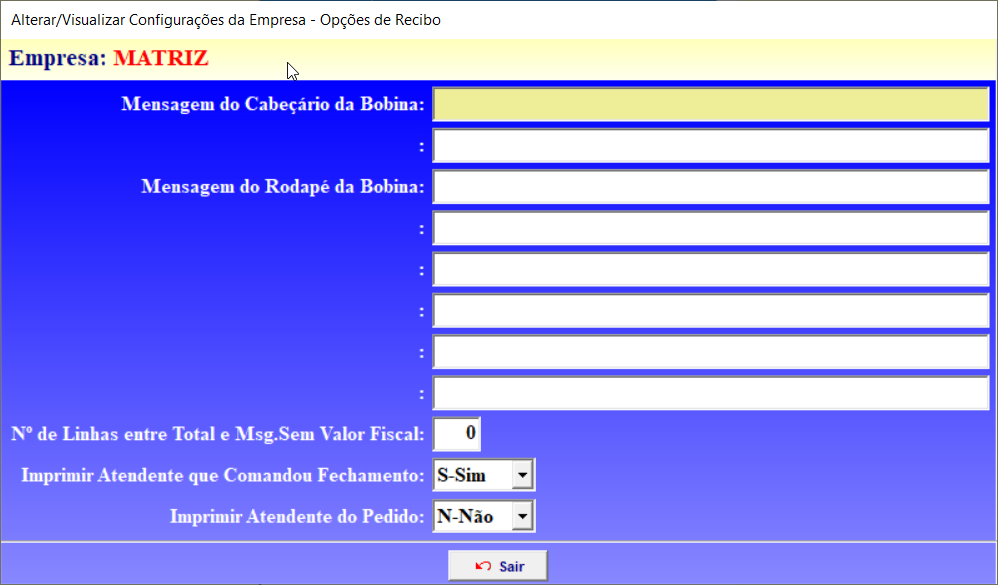
| Campo | Padrão | Descrição / Orientação de Suporte |
|---|---|---|
Mensagem do Cabeçário da Bobina (Linha 01) |
— | Primeira linha da mensagem personalizada impressa no cabeçalho da bobina (recibo não fiscal). Deixar em branco para não imprimir mensagem no cabeçário. |
Mensagem do Cabeçário da Bobina (Linha 02) |
— | Segunda linha da mensagem personalizada impressa no cabeçalho da bobina. |
| Campo | Padrão | Descrição / Orientação de Suporte |
|---|---|---|
Mensagem do Rodapé da Bobina (Linha 01) |
— | Primeira linha da mensagem personalizada impressa no rodapé da bobina (recibo não fiscal). Utilizada para informações fixas como agradecimento, CNPJ ou promoções. |
Mensagem do Rodapé da Bobina (Linha 02) |
— | Segunda linha do rodapé da bobina. |
Mensagem do Rodapé da Bobina (Linha 03) |
— | Terceira linha do rodapé da bobina. |
Mensagem do Rodapé da Bobina (Linha 04) |
— | Quarta linha do rodapé da bobina. |
Mensagem do Rodapé da Bobina (Linha 05) |
— | Quinta linha do rodapé da bobina. |
Mensagem do Rodapé da Bobina (Linha 06) |
— | Sexta linha do rodapé da bobina. |
| Campo | Padrão | Descrição / Orientação de Suporte |
|---|---|---|
Nº de Linhas entre Total e Msg.Sem Valor Fiscal |
0 | Define quantas linhas em branco são impressas entre o total da venda e a mensagem "Sem Valor Fiscal" no recibo. Aumentar quando houver necessidade de espaçamento visual entre esses elementos. |
Imprimir Atendente que Comandou Fechamento |
S-Sim | Quando S-Sim, o nome do atendente que realizou o fechamento da conta é impresso no recibo, facilitando a identificação de responsabilidade no atendimento. |
Imprimir Atendente do Pedido |
N-Não | Quando S-Sim, o nome do atendente que registrou o pedido é impresso no recibo. Útil quando o atendente do pedido é diferente do atendente que realizou o fechamento. |
Opções de Local de Impressão
Configurações de espelho, roteamento por mesa e dia da semana, transferência, agrupamento, ordenação e textos fixos dos locais de impressão.
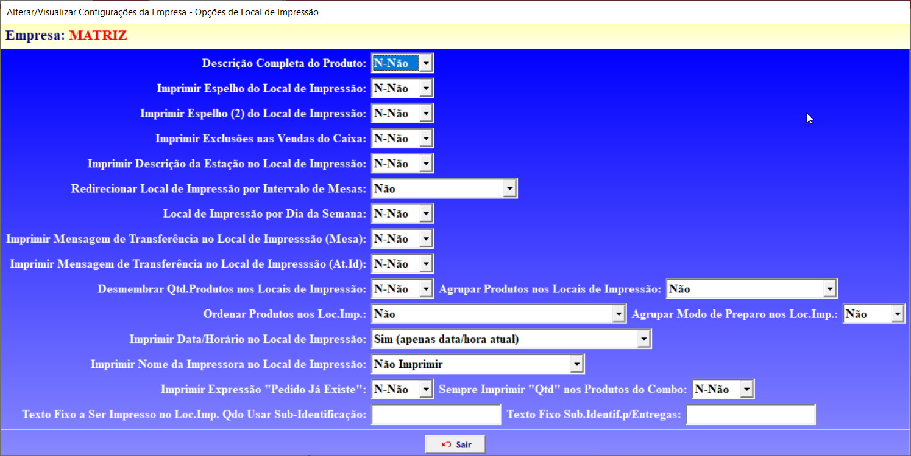
| Campo | Padrão | Descrição / Orientação de Suporte |
|---|---|---|
Descrição Completa do Produto |
N-Não | Quando S-Sim, a descrição completa do produto é impressa no local de impressão (comanda de cozinha/bar), em vez da descrição resumida. Ativar quando a cozinha precisar do nome completo para identificar o item. |
Imprimir Espelho do Local de Impressão |
N-Não | Quando S-Sim, uma cópia (espelho) da comanda é enviada a um segundo local de impressão configurado. Útil quando dois pontos precisam receber a mesma informação simultaneamente. |
Imprimir Espelho (2) do Local de Impressão |
N-Não | Quando S-Sim, uma segunda cópia espelho é enviada a um terceiro local de impressão. Complementa a opção de espelho primário quando há três destinos para a mesma comanda. |
Imprimir Exclusões nas Vendas do Caixa |
N-Não | Quando S-Sim, os itens excluídos de um pedido são impressos no local de impressão com indicação de cancelamento, permitindo que a cozinha seja notificada das remoções. |
Imprimir Descrição da Estação no Local de Impressão |
N-Não | Quando S-Sim, o nome da estação (PDV) que originou o pedido é impresso na comanda, facilitando a identificação da origem em ambientes com múltiplos caixas. |
| Campo | Padrão | Descrição / Orientação de Suporte |
|---|---|---|
Redirecionar Local de Impressão por Intervalo de Mesas |
Não | Quando ativo, permite redirecionar automaticamente a impressão para locais diferentes conforme o intervalo de número de mesas. Útil para ambientes com setores separados por faixas de mesas. |
Local de Impressão por Dia da Semana |
N-Não | Quando S-Sim, o sistema utiliza locais de impressão diferentes conforme o dia da semana configurado. Útil para estabelecimentos com rotinas operacionais distintas por dia. |
| Campo | Padrão | Descrição / Orientação de Suporte |
|---|---|---|
Imprimir Mensagem de Transferência no Local de Impresssão (Mesa) |
N-Não | Quando S-Sim, uma mensagem é impressa no local de impressão ao realizar a transferência de itens entre mesas, notificando a cozinha/bar sobre a movimentação. |
Imprimir Mensagem de Transferência no Local de Impresssão (At.Id) |
N-Não | Quando S-Sim, a mensagem de transferência é impressa no local de impressão também ao transferir por atendimento/identificação (At.Id), além da transferência por mesa. |
| Campo | Padrão | Descrição / Orientação de Suporte |
|---|---|---|
Desmembrar Qtd.Produtos nos Locais de Impressão |
N-Não | Quando S-Sim, produtos com quantidade maior que 1 são impressos como linhas individuais na comanda (ex.: 3x Frango → três linhas separadas), facilitando o preparo unitário. |
Agrupar Produtos nos Locais de Impressão |
Não | Define se produtos iguais lançados separadamente são agrupados em uma única linha com quantidade somada na comanda. Reduz o volume de itens impressos quando há múltiplos lançamentos do mesmo produto. |
Ordenar Produtos nos Loc.Imp. |
Não | Define o critério de ordenação dos produtos impressos na comanda. Quando diferente de Não, os produtos são reordenados antes de serem enviados ao local de impressão. |
Agrupar Modo de Preparo nos Loc.Imp. |
Não | Quando ativo, os itens da comanda são agrupados por modo de preparo, facilitando a organização da cozinha ao separar visualmente itens com preparos diferentes. |
| Campo | Padrão | Descrição / Orientação de Suporte |
|---|---|---|
Imprimir Data/Horário no Local de Impressão |
Sim (apenas data/hora atual) | Define se e como a data e o horário são impressos na comanda. Sim (apenas data/hora atual): imprime somente o horário atual do lançamento. |
Imprimir Nome da Impressora no Local de Impressão |
Não Imprimir | Define se o nome da impressora/local de impressão é impresso na comanda. Não Imprimir: o nome não é incluído. Ativar para facilitar a identificação da impressora em ambientes com várias filas de impressão. |
Imprimir Expressão "Pedido Já Existe" |
N-Não | Quando S-Sim, o sistema imprime a expressão "Pedido Já Existe" na comanda ao reimprimir um pedido já enviado anteriormente, alertando a cozinha sobre o reenvio. |
Sempre Imprimir "Qtd" nos Produtos do Combo |
N-Não | Quando S-Sim, a quantidade é sempre impressa ao lado dos produtos componentes de um combo na comanda, mesmo quando a quantidade for 1. |
Texto Fixo a Ser Impresso no Loc.Imp. Qdo Usar Sub-Identificação |
— | Texto fixo impresso na comanda quando o pedido utiliza sub-identificação (ex.: número de cadeira ou divisão interna da mesa). Deixar em branco para não imprimir. |
Texto Fixo Sub.Identif.p/Entregas |
— | Texto fixo impresso na comanda quando o pedido é vinculado a uma entrega com sub-identificação. Útil para diferenciar comandas de delivery das comandas de mesa. |
Opções de Pré-Conta
Configurações de exibição de ítens, divisão de valor, taxa de serviço, modo de preparo, espelho de pré-conta, impressão automática e mensagens de cabeçário e rodapé.
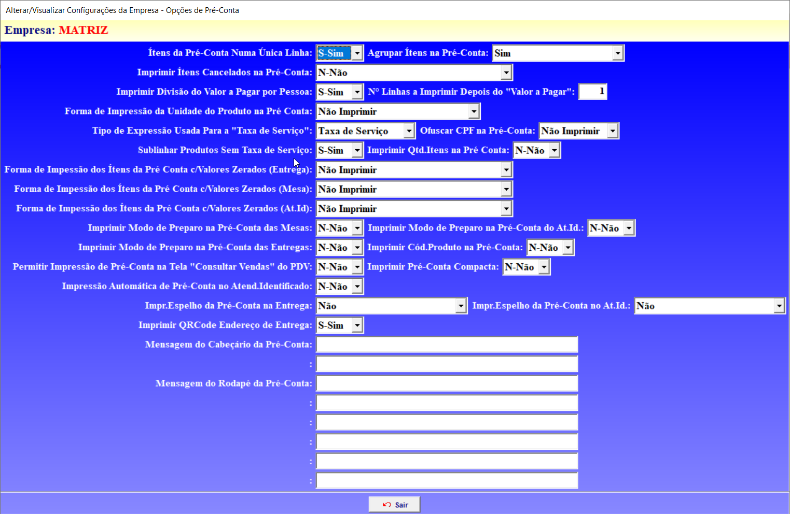
| Campo | Padrão | Descrição / Orientação de Suporte |
|---|---|---|
Ítens da Pré-Conta Numa Única Linha |
Seleção | Define se cada ítem da pré-conta é exibido em uma única linha ou com quebra. Use S-Sim para layout mais compacto. |
Agrupar Ítens na Pré-Conta |
Seleção | Quando ativo, produtos iguais são agrupados na pré-conta em vez de listados individualmente. |
Imprimir Ítens Cancelados na Pré-Conta |
Seleção | Controla se produtos cancelados aparecem na pré-conta. N-Não omite os cancelados da impressão. |
Forma de Impressão da Unidade do Produto na Pré Conta |
Seleção | Define como a unidade de medida do produto é exibida na pré-conta (ex.: Não Imprimir, sigla, nome completo). |
Imprimir Qtd.Itens na Pré Conta |
Seleção | Controla se a quantidade de ítens é impressa no cabeçário ou corpo da pré-conta. |
Forma de Impessão dos Ítens da Pré Conta c/Valores Zerados (Entrega) |
Seleção | Define como ítens com valor zero são tratados na pré-conta de entregas (Não Imprimir, imprimir, etc.). |
Forma de Impessão dos Ítens da Pré Conta c/Valores Zerados (Mesa) |
Seleção | Define como ítens com valor zero são tratados na pré-conta de mesas. |
Forma de Impessão dos Ítens da Pré Conta c/Valores Zerados (At.Id) |
Seleção | Define como ítens com valor zero são tratados na pré-conta de atendimento identificado. |
| Campo | Padrão | Descrição / Orientação de Suporte |
|---|---|---|
Imprimir Divisão do Valor a Pagar por Pessoa |
Seleção | Quando ativo, a pré-conta exibe o valor total dividido pelo número de pessoas da mesa. |
Nº Linhas a Imprimir Depois do "Valor a Pagar" |
Número | Quantidade de linhas em branco impressas após o campo "Valor a Pagar" na pré-conta, útil para assinatura. |
Tipo de Expressão Usada Para a "Taxa de Serviço" |
Seleção | Define o texto exibido na pré-conta referente à taxa de serviço (ex.: "Taxa de Serviço", "Serviço", etc.). |
Sublinhar Produtos Sem Taxa de Serviço |
Seleção | Quando S-Sim, produtos que não incluem taxa de serviço são sublinhados na pré-conta para facilitar identificação. |
| Campo | Padrão | Descrição / Orientação de Suporte |
|---|---|---|
Imprimir Modo de Preparo na Pré-Conta das Mesas |
Seleção | Controla se o modo de preparo dos produtos é impresso na pré-conta das mesas. |
Imprimir Modo de Preparo na Pré-Conta do At.Id. |
Seleção | Controla se o modo de preparo dos produtos é impresso na pré-conta do atendimento identificado. |
Imprimir Modo de Preparo na Pré-Conta das Entregas |
Seleção | Controla se o modo de preparo dos produtos é impresso na pré-conta das entregas. |
Imprimir Cód.Produto na Pré-Conta |
Seleção | Quando ativo, o código do produto é exibido junto ao nome na pré-conta. |
Ofuscar CPF na Pré-Conta |
Seleção | Define como o CPF do cliente é exibido na pré-conta (Não Imprimir, exibir parcial, exibir completo). |
| Campo | Padrão | Descrição / Orientação de Suporte |
|---|---|---|
Permitir Impressão de Pré-Conta na Tela "Consultar Vendas" do PDV |
Seleção | Quando N-Não, o botão de pré-conta fica desabilitado na tela "Consultar Vendas" do PDV. |
Imprimir Pré-Conta Compacta |
Seleção | Quando ativo, imprime versão reduzida da pré-conta com menos informações para economizar papel. |
Impressão Automática de Pré-Conta no Atend.Identificado |
Seleção | Define se a pré-conta é impressa automaticamente ao fechar um atendimento identificado. |
Impr.Espelho da Pré-Conta na Entrega |
Seleção | Configura se e onde é impresso o espelho (cópia) da pré-conta nas entregas (Não, local específico). |
Impr.Espelho da Pré-Conta no At.Id. |
Seleção | Configura se e onde é impresso o espelho (cópia) da pré-conta no atendimento identificado. |
Imprimir QRCode Endereço de Entrega |
Seleção | Quando S-Sim, imprime um QRCode com o endereço de entrega na pré-conta, facilitando navegação para o entregador. |
| Campo | Padrão | Descrição / Orientação de Suporte |
|---|---|---|
Mensagem do Cabeçário da Pré-Conta (Linha 01) |
Texto | Primeira linha da mensagem impressa no cabeçário da pré-conta. Aparece acima dos ítens. |
Mensagem do Cabeçário da Pré-Conta (Linha 02) |
Texto | Segunda linha da mensagem do cabeçário da pré-conta. |
Mensagem do Rodapé da Pré-Conta (Linha 01) |
Texto | Primeira linha da mensagem impressa no rodapé da pré-conta. Aparece abaixo dos totais. |
Mensagem do Rodapé da Pré-Conta (Linha 02) |
Texto | Segunda linha do rodapé da pré-conta. |
Mensagem do Rodapé da Pré-Conta (Linha 03) |
Texto | Terceira linha do rodapé da pré-conta. |
Mensagem do Rodapé da Pré-Conta (Linha 04) |
Texto | Quarta linha do rodapé da pré-conta. |
Mensagem do Rodapé da Pré-Conta (Linha 05) |
Texto | Quinta linha do rodapé da pré-conta. |
Mensagem do Rodapé da Pré-Conta (Linha 06) |
Texto | Sexta linha do rodapé da pré-conta. |
Mensagem do Rodapé da Pré-Conta (Linha 07) |
Texto | Sétima linha do rodapé da pré-conta. |
Opções de Check-Out
Configuração de sub-identificação e identificação no momento do check-out (fechamento de venda).
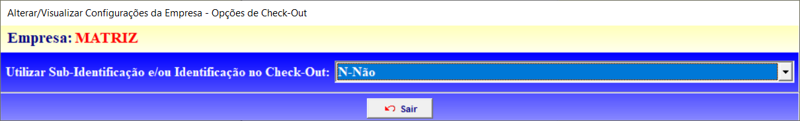
| Campo | Padrão | Descrição / Orientação de Suporte |
|---|---|---|
Utilizar Sub-Identificação e/ou Identificação no Check-Out |
N-Não | Define se o sistema solicita sub-identificação e/ou identificação do cliente no momento do check-out (fechamento de venda). Ativar conforme necessidade operacional do estabelecimento. |
Opções de Entregas
Configurações de desconto, cobrança, impressão, caixa, cupom fiscal, município padrão, observações e taxa de entrega.
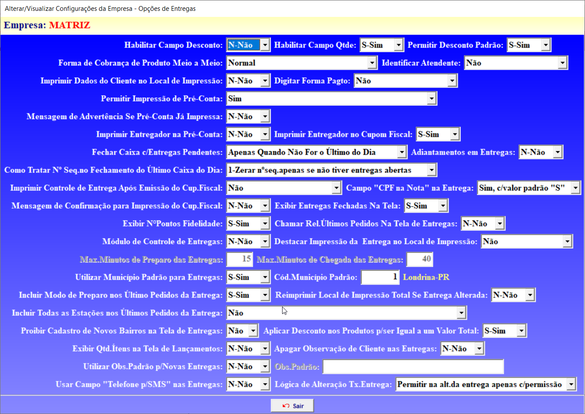
| Campo | Padrão | Descrição / Orientação de Suporte |
|---|---|---|
Habilitar Campo Desconto |
N-Não | Quando N-Não, o campo de desconto fica oculto na tela de entregas. Ativar apenas quando o estabelecimento permite conceder desconto diretamente na entrega. |
Habilitar Campo Qtde |
S-Sim | Exibe o campo de quantidade de itens na tela de entregas. Manter S-Sim na maioria dos casos. |
Permitir Desconto Padrão |
S-Sim | Quando S-Sim, aplica o desconto padrão configurado no produto às entregas. Desativar se o estabelecimento não trabalha com desconto padrão em delivery. |
Forma de Cobrança de Produto Meio a Meio |
Normal | Define como o sistema calcula o valor de produtos meio a meio nas entregas. Opções comuns: Normal, Maior Valor. |
Identificar Atendente |
Não | Quando ativo, solicita a identificação do atendente no lançamento da entrega. Usar em estabelecimentos que controlam comissão ou produtividade por atendente. |
| Campo | Padrão | Descrição / Orientação de Suporte |
|---|---|---|
Imprimir Dados do Cliente no Local de Impressão |
N-Não | Quando S-Sim, imprime os dados do cliente (nome, endereço, telefone) na comanda do local de impressão da entrega. Ativar em operações de delivery com roteamento. |
Digitar Forma Pagto |
Não | Define se a forma de pagamento deve ser informada no momento do lançamento da entrega. Útil para controle antecipado de pagamento no delivery. |
Permitir Impressão de Pré-Conta |
Sim | Controla se é possível imprimir a pré-conta em entregas. Manter Sim para operações de delivery que entregam comprovante antes do pagamento. |
Mensagem de Advertência Se Pré-Conta Já Impressa |
N-Não | Quando S-Sim, exibe aviso ao tentar reimprimir uma pré-conta já impressa anteriormente. Ajuda a evitar reimpressões acidentais. |
Imprimir Entregador na Pré-Conta |
N-Não | Quando S-Sim, inclui o nome do entregador na pré-conta impressa. Ativar quando o cliente precisa identificar quem irá receber o pedido. |
Imprimir Entregador no Cupom Fiscal |
S-Sim | Quando S-Sim, inclui o nome do entregador no cupom fiscal emitido. Útil para controle de entregas vinculado ao documento fiscal. |
| Campo | Padrão | Descrição / Orientação de Suporte |
|---|---|---|
Fechar Caixa c/Entregas Pendentes |
Apenas Quando Não For o Último do Dia | Define o comportamento do fechamento de caixa quando existem entregas em aberto. A opção "Apenas Quando Não For o Último do Dia" permite fechar caixas intermediários mas bloqueia o último do dia. |
Adiantamentos em Entregas |
N-Não | Quando S-Sim, habilita o registro de adiantamentos de pagamento para entregas. Ativar em operações que recebem sinal antecipado no pedido. |
Como Tratar Nº Seq.no Fechamento do Último Caixa do Dia |
1-Zerar n°seq.apenas se não tiver entregas abertas | Define como o número sequencial de entregas é tratado no fechamento do último caixa do dia. A opção 1 zera a sequência apenas quando não há entregas abertas, evitando conflito com pedidos em andamento. |
| Campo | Padrão | Descrição / Orientação de Suporte |
|---|---|---|
Imprimir Controle de Entrega Após Emissão do Cup.Fiscal |
Não | Quando ativo, emite automaticamente o controle de entrega logo após a emissão do cupom fiscal. Usar quando o fluxo operacional exige impressão do controle junto ao fiscal. |
Campo "CPF na Nota" na Entrega |
Sim, c/valor padrão "S" | Define se o campo CPF na nota é exibido e qual o valor padrão na tela de entregas. "Sim, c/valor padrão S" pré-marca a opção para solicitar CPF por padrão. |
Mensagem de Confirmação para Impressão do Cup.Fiscal |
N-Não | Quando S-Sim, exibe uma mensagem de confirmação antes de emitir o cupom fiscal na entrega. Ajuda a evitar emissões acidentais. |
Exibir Entregas Fechadas Na Tela |
S-Sim | Quando S-Sim, mantém visíveis na tela de entregas os pedidos já encerrados. Facilita consultas e confirmações de entrega realizada. |
| Campo | Padrão | Descrição / Orientação de Suporte |
|---|---|---|
Exibir NºPontos Fidelidade |
S-Sim | Quando S-Sim, exibe o saldo de pontos do programa de fidelidade do cliente na tela de entregas. Manter ativo quando o estabelecimento utiliza fidelidade em delivery. |
Chamar Rel.Últimos Pedidos Na Tela de Entregas |
N-Não | Quando S-Sim, exibe automaticamente o relatório dos últimos pedidos do cliente ao abrir a tela de entregas. Útil para agilizar reordens e confirmar histórico. |
Módulo de Controle de Entregas |
N-Não | Habilita o módulo completo de controle de entregas com acompanhamento de tempo de preparo e chegada. Requer configuração dos campos de tempo (Max.Minutos) abaixo. |
Destacar Impressão da Entrega no Local de Impressão |
Não | Quando ativo, realça visualmente a impressão de pedidos de entrega no local de impressão configurado. Útil para diferenciar entregas dos pedidos internos na cozinha. |
| Campo | Padrão | Descrição / Orientação de Suporte |
|---|---|---|
Max.Minutos de Preparo das Entregas |
15 | Tempo máximo em minutos para o preparo da entrega antes de acionar alerta. Disponível apenas quando o Módulo de Controle de Entregas está ativo. |
Max.Minutos de Chegada das Entregas |
40 | Tempo máximo em minutos para o entregador chegar ao destino antes de acionar alerta. Disponível apenas quando o Módulo de Controle de Entregas está ativo. |
Utilizar Município Padrão para Entregas |
S-Sim | Quando S-Sim, preenche automaticamente o município nas entregas com o município padrão configurado. Indicado para estabelecimentos que entregam majoritariamente em uma cidade. |
Cód.Município Padrão |
1 | Código do município padrão utilizado nas entregas. Habilitado quando "Utilizar Município Padrão para Entregas" está ativo. O sistema exibe o nome do município ao lado do código. |
| Campo | Padrão | Descrição / Orientação de Suporte |
|---|---|---|
Incluir Modo de Preparo nos Último Pedidos da Entrega |
S-Sim | Quando S-Sim, exibe o modo de preparo dos produtos no relatório de últimos pedidos da entrega. Facilita a confirmação de pedidos com preparações especiais. |
Reimprimir Local de Impressão Total Se Entrega Alterada |
N-Não | Quando S-Sim, reimprime automaticamente todos os locais de impressão quando a entrega é alterada. Ativar quando qualquer alteração no pedido precisa ser comunicada a todas as estações. |
Incluir Todas as Estações nos Últimos Pedidos da Entrega |
Não | Define se todas as estações de trabalho são incluídas no relatório de últimos pedidos da entrega. Usar quando múltiplas estações precisam acompanhar o histórico completo. |
| Campo | Padrão | Descrição / Orientação de Suporte |
|---|---|---|
Proibir Cadastro de Novos Bairros na Tela de Entregas |
Não | Quando ativo, impede que novos bairros sejam cadastrados diretamente pela tela de entregas. Ativar quando o cadastro de bairros deve ser controlado centralmente pelo administrador. |
Aplicar Desconto nos Produtos p/ser Igual a um Valor Total |
S-Sim | Quando S-Sim, o sistema aplica desconto proporcional nos produtos para que o total da entrega bata com um valor fechado informado. Útil para arredondamentos e promoções com valor fixo. |
Exibir Qtd.Ítens na Tela de Lançamentos |
N-Não | Quando S-Sim, exibe a quantidade de itens do pedido na tela de lançamentos de entrega. Facilita a conferência rápida do volume do pedido. |
Apagar Observação de Cliente nas Entregas |
N-Não | Quando S-Sim, limpa automaticamente a observação do cliente ao finalizar a entrega. Usar com cautela — pode apagar informações relevantes para pedidos recorrentes. |
Utilizar Obs.Padrão p/Novas Entregas |
N-Não | Quando S-Sim, preenche automaticamente a observação de novas entregas com o texto definido no campo "Obs.Padrão". Útil para incluir instruções fixas em todos os pedidos de delivery. |
Obs.Padrão |
— | Texto de observação padrão aplicado automaticamente a novas entregas. Disponível apenas quando "Utilizar Obs.Padrão p/Novas Entregas" está ativo. |
| Campo | Padrão | Descrição / Orientação de Suporte |
|---|---|---|
Usar Campo "Telefone p/SMS" nas Entregas |
N-Não | Quando S-Sim, habilita um campo específico para telefone celular destinado ao envio de SMS nas entregas. Ativar quando o estabelecimento utiliza notificação por SMS para o cliente. |
Lógica de Alteração Tx.Entrega |
Permitir na alt.da entrega apenas c/permissão | Define a regra de permissão para alterar a taxa de entrega. A opção "Permitir na alt.da entrega apenas c/permissão" exige que o operador tenha permissão específica para modificar o valor da taxa. |
Opções de Entregas — Outras Opções
Previsão de entrega, agendamento, sub-identificação, troco, cancelamento de taxa, permissões de entregador, logradouros e serviço de requisição.
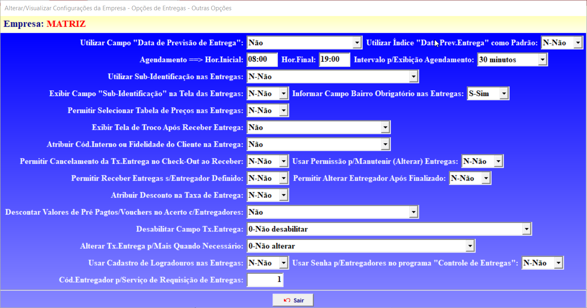
| Campo | Padrão | Descrição / Orientação de Suporte |
|---|---|---|
Utilizar Campo "Data de Previsão de Entrega" |
Não | Quando ativo, habilita o campo de data de previsão de entrega na tela de entregas. Usar em operações que combinam data/hora de entrega com o cliente antecipadamente. |
Utilizar Índice "Data Prev.Entrega" como Padrão |
N-Não | Quando S-Sim, utiliza a data de previsão de entrega como critério padrão de ordenação na tela de entregas. Disponível apenas quando o campo de previsão está ativo. |
Agendamento ==> Hor.Inicial |
08:00 | Hora de início do intervalo de agendamento de entregas. Junto com Hor.Final e Intervalo define as faixas horárias disponíveis para o cliente escolher. |
Hor.Final |
19:00 | Hora de término do intervalo de agendamento de entregas. |
Intervalo p/Exibição Agendamento |
30 minutos | Define o espaçamento entre as faixas horárias exibidas no agendamento. Ex.: 30 minutos gera opções 08:00, 08:30, 09:00, etc. |
| Campo | Padrão | Descrição / Orientação de Suporte |
|---|---|---|
Utilizar Sub-Identificação nas Entregas |
N-Não | Habilita o uso de sub-identificação (complemento de endereço ou código adicional) no cadastro de entregas. Ativar quando o estabelecimento precisa de um segundo nível de identificação por entrega. |
Exibir Campo "Sub-Identificação" na Tela das Entregas |
N-Não | Quando S-Sim, exibe o campo de sub-identificação na tela de entregas para preenchimento pelo operador. Depende de "Utilizar Sub-Identificação nas Entregas" estar ativo. |
Informar Campo Bairro Obrigatório nas Entregas |
S-Sim | Quando S-Sim, o campo bairro passa a ser obrigatório no cadastro de entregas. Recomendado quando o cálculo da taxa de entrega depende do bairro do cliente. |
| Campo | Padrão | Descrição / Orientação de Suporte |
|---|---|---|
Permitir Selecionar Tabela de Preços nas Entregas |
N-Não | Quando S-Sim, permite que o operador escolha uma tabela de preços diferente da padrão ao registrar uma entrega. Usar em estabelecimentos com tabelas diferenciadas por região ou canal. |
Exibir Tela de Troco Após Receber Entrega |
Não | Quando ativo, exibe uma tela de troco ao confirmar o recebimento de entrega. Útil para operações em que o entregador recebe em dinheiro e precisa calcular o troco na volta. |
Atribuir Cód.Interno ou Fidelidade do Cliente na Entrega |
Não | Quando ativo, vincula o código interno ou de fidelidade do cliente ao registro da entrega. Ativar quando o estabelecimento utiliza programa de fidelidade no delivery. |
| Campo | Padrão | Descrição / Orientação de Suporte |
|---|---|---|
Permitir Cancelamento da Tx.Entrega no Check-Out ao Receber |
N-Não | Quando S-Sim, permite cancelar a taxa de entrega no momento do check-out ao receber o pedido. Usar apenas em operações com regras específicas de dispensa de taxa. |
Usar Permissão p/Manutenir (Alterar) Entregas |
N-Não | Quando S-Sim, exige permissão específica do operador para alterar dados de uma entrega já registrada. Recomendado para controle rigoroso de alterações pós-lançamento. |
Permitir Receber Entregas s/Entregador Definido |
N-Não | Quando S-Sim, permite confirmar o recebimento de entrega sem que um entregador esteja associado ao pedido. Ativar apenas em operações sem controle de entregador. |
Permitir Alterar Entregador Após Finalizado |
N-Não | Quando S-Sim, permite trocar o entregador mesmo após a entrega ser marcada como finalizada. Usar com cautela para não impactar relatórios de comissão e controle. |
| Campo | Padrão | Descrição / Orientação de Suporte |
|---|---|---|
Atribuir Desconto na Taxa de Entrega |
N-Não | Quando S-Sim, permite aplicar desconto diretamente sobre a taxa de entrega. Ativar somente quando o estabelecimento pratica desconto na taxa como política comercial. |
Descontar Valores de Pré Pagtos/Vouchers no Acerto c/Entregadores |
Não | Quando ativo, abate do acerto do entregador os valores de pré-pagamentos e vouchers utilizados pelo cliente. Ativar quando o estabelecimento repassa essas deduções ao entregador. |
Desabilitar Campo Tx.Entrega |
0-Não desabilitar | Define se e quando o campo de taxa de entrega fica desabilitado para edição. A opção "0-Não desabilitar" mantém o campo sempre editável. |
Alterar Tx.Entrega p/Mais Quando Necessário |
0-Não alterar | Controla se o sistema pode aumentar automaticamente a taxa de entrega quando necessário (ex.: endereço fora da área padrão). A opção "0-Não alterar" desativa esse ajuste automático. |
| Campo | Padrão | Descrição / Orientação de Suporte |
|---|---|---|
Usar Cadastro de Logradouros nas Entregas |
N-Não | Quando S-Sim, utiliza o cadastro de logradouros do sistema para preencher o endereço nas entregas. Recomendado quando há integração com base de ruas e CEP cadastrada. |
Usar Senha p/Entregadores no programa "Controle de Entregas" |
N-Não | Quando S-Sim, exige que os entregadores se autentiquem com senha ao acessar o programa de controle de entregas. Ativar para aumentar o controle de acesso dos entregadores. |
Cód.Entregador p/Serviço de Requisição de Entregas |
1 | Código do entregador padrão utilizado pelo serviço de requisição de entregas (integração com apps ou sistemas externos). Informar o código correspondente ao entregador configurado para esse serviço. |
Opções de Entregas — Mensagem para Operador
Configuração da mensagem exibida ao operador no momento da entrega pelo concentrador.
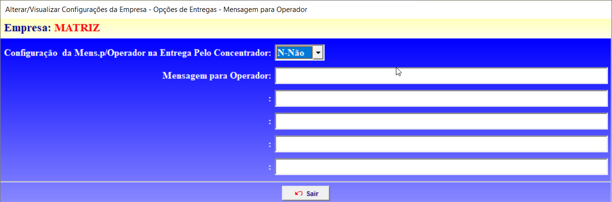
| Campo | Padrão | Descrição / Orientação de Suporte |
|---|---|---|
Configuração da Mens.p/Operador na Entrega Pelo Concentrador |
N-Não | Define se o sistema exibe uma mensagem ao operador durante a entrega processada pelo concentrador. Ativar quando for necessário comunicar instruções específicas ao operador no momento da entrega. |
| Campo | Padrão | Descrição / Orientação de Suporte |
|---|---|---|
Mensagem para Operador (Linha 1) |
— | Primeira linha da mensagem exibida ao operador durante a entrega pelo concentrador. Preencher com o texto inicial da instrução ou aviso. |
Mensagem para Operador (Linha 2) |
— | Segunda linha da mensagem para o operador. Usar para complementar a linha 1. |
Mensagem para Operador (Linha 3) |
— | Terceira linha da mensagem para o operador. |
Mensagem para Operador (Linha 4) |
— | Quarta linha da mensagem para o operador. |
Mensagem para Operador (Linha 5) |
— | Quinta linha da mensagem para o operador. |
Opções de Atendimento c/ Identificação
Configurações do módulo de atendimento com identificação de cliente: comportamento de abertura, descontos, gasto máximo, consumação mínima, taxa de serviço, ingressos, transferências e impressão.
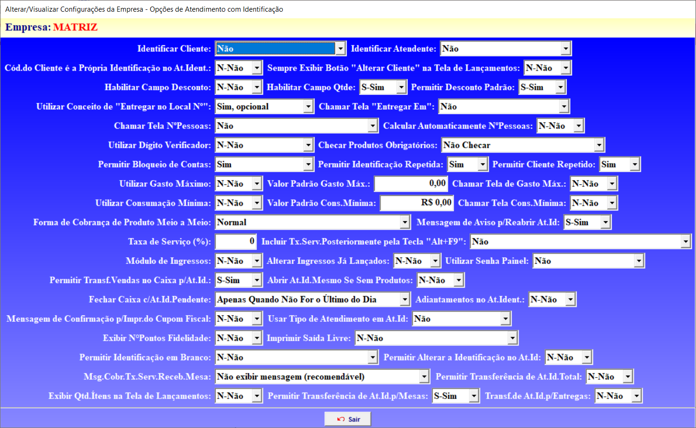
| Campo | Padrão | Descrição / Orientação de Suporte |
|---|---|---|
Identificar Cliente |
Não | Define se o sistema solicita a identificação do cliente ao abrir um atendimento com identificação. |
Identificar Atendente |
Não | Define se o sistema solicita a identificação do atendente ao abrir o atendimento. |
Cód.do Cliente é a Própria Identificação no At.Ident. |
N-Não | Quando ativado, o código do cliente cadastrado é usado diretamente como identificação no atendimento, sem necessidade de campo separado. |
Sempre Exibir Botão "Alterar Cliente" na Tela de Lançamentos |
N-Não | Exibe o botão para troca de cliente durante o lançamento, mesmo quando não seria exibido por padrão. |
Permitir Identificação Repetida |
Sim | Permite abrir mais de um atendimento com a mesma identificação de cliente. |
Permitir Cliente Repetido |
Sim | Permite associar o mesmo cliente a múltiplos atendimentos simultaneamente. |
Permitir Identificação em Branco |
N-Não | Permite abrir um atendimento com identificação sem informar o nome ou código do cliente. |
Permitir Alterar a Identificação no At.Id |
N-Não | Permite alterar os dados de identificação de um atendimento já aberto. |
| Campo | Padrão | Descrição / Orientação de Suporte |
|---|---|---|
Habilitar Campo Desconto |
N-Não | Exibe o campo de desconto na tela de lançamentos do atendimento com identificação. |
Habilitar Campo Qtde |
S-Sim | Exibe o campo de quantidade na tela de lançamentos. |
Permitir Desconto Padrão |
S-Sim | Aplica automaticamente o desconto padrão configurado no cadastro do cliente durante o atendimento. |
| Campo | Padrão | Descrição / Orientação de Suporte |
|---|---|---|
Utilizar Conceito de "Entregar no Local Nº" |
Sim, opcional | Define se o sistema usa o conceito de local numerado para entrega durante o atendimento com identificação. |
Chamar Tela "Entregar Em" |
Não | Abre automaticamente a tela de destino de entrega ao iniciar um atendimento. |
Chamar Tela NºPessoas |
Não | Abre automaticamente a tela de informação do número de pessoas ao abrir o atendimento. |
Calcular Automaticamente NºPessoas |
N-Não | O sistema calcula automaticamente o número de pessoas sem solicitar confirmação do operador. |
| Campo | Padrão | Descrição / Orientação de Suporte |
|---|---|---|
Utilizar Digito Verificador |
N-Não | Valida o código de identificação do cliente usando dígito verificador, evitando erros de digitação. |
Checar Produtos Obrigatórios |
Não Checar | Define se o sistema verifica a obrigatoriedade de lançar determinados produtos antes de fechar o atendimento. |
Permitir Bloqueio de Contas |
Sim | Permite bloquear atendimentos com identificação para impedir novos lançamentos. |
| Campo | Padrão | Descrição / Orientação de Suporte |
|---|---|---|
Utilizar Gasto Máximo |
N-Não | Ativa o controle de limite máximo de consumo por atendimento. |
Valor Padrão Gasto Máx. |
0,00 | Valor padrão do limite máximo de consumo aplicado aos atendimentos quando o gasto máximo está ativado. |
Chamar Tela de Gasto Máx. |
N-Não | Abre automaticamente a tela de configuração do gasto máximo ao iniciar o atendimento. |
Utilizar Consumação Mínima |
N-Não | Ativa o controle de consumação mínima obrigatória por atendimento. |
Valor Padrão Cons.Mínima |
R$ 0,00 | Valor padrão da consumação mínima exigida por atendimento. |
Chamar Tela Cons.Mínima |
N-Não | Abre automaticamente a tela de consumação mínima ao iniciar o atendimento. |
| Campo | Padrão | Descrição / Orientação de Suporte |
|---|---|---|
Forma de Cobrança de Produto Meio a Meio |
Normal | Define como os produtos divididos meio a meio são cobrados no atendimento com identificação. |
Mensagem de Aviso p/Reabrir At.Id |
S-Sim | Exibe uma mensagem de aviso ao operador quando tenta reabrir um atendimento com identificação já encerrado. |
Taxa de Serviço (%) |
0 | Percentual de taxa de serviço aplicado automaticamente ao total do atendimento com identificação. |
Incluir Tx.Serv.Posteriormente pela Tecla "Alt+F9" |
Não | Permite incluir a taxa de serviço manualmente durante o atendimento pressionando Alt+F9, em vez de aplicá-la automaticamente. |
Msg.Cobr.Tx.Serv.Receb.Mesa |
Não exibir mensagem (recomendável) | Define se o sistema exibe mensagem sobre cobrança de taxa de serviço ao receber mesa no atendimento com identificação. |
| Campo | Padrão | Descrição / Orientação de Suporte |
|---|---|---|
Módulo de Ingressos |
N-Não | Ativa o módulo de ingressos integrado ao atendimento com identificação. |
Alterar Ingressos Já Lançados |
N-Não | Permite editar ou cancelar ingressos que já foram lançados no atendimento. |
Utilizar Senha Painel |
Não | Exige senha do painel para autorizar determinadas operações no atendimento com identificação. |
| Campo | Padrão | Descrição / Orientação de Suporte |
|---|---|---|
Permitir Transf.Vendas no Caixa p/At.Id. |
S-Sim | Permite transferir vendas realizadas no caixa para um atendimento com identificação. |
Abrir At.Id.Mesmo Se Sem Produtos |
N-Não | Permite abrir um atendimento com identificação mesmo que ainda não existam produtos lançados. |
Fechar Caixa c/At.Id.Pendente |
Apenas Quando Não For o Último do Dia | Define o comportamento do sistema ao tentar fechar o caixa com atendimentos com identificação ainda em aberto. |
Adiantamentos no At.Ident. |
N-Não | Permite registrar adiantamentos de pagamento durante o atendimento com identificação antes do fechamento. |
Exibir Qtd.Itens na Tela de Lançamentos |
N-Não | Exibe a quantidade de itens lançados diretamente na tela de lançamentos do atendimento. |
Permitir Transferência de At.Id.p/Mesas |
S-Sim | Permite transferir um atendimento com identificação para uma mesa. |
Transf.de At.Id.p/Entregas |
N-Não | Permite transferir um atendimento com identificação para o módulo de entregas. |
Permitir Transferência de At.Id.Total |
N-Não | Permite transferir o atendimento completo com identificação para outro operador ou destino. |
| Campo | Padrão | Descrição / Orientação de Suporte |
|---|---|---|
Mensagem de Confirmação p/Impr.do Cupom Fiscal |
N-Não | Exibe uma mensagem de confirmação antes de imprimir o cupom fiscal no fechamento do atendimento com identificação. |
Usar Tipo de Atendimento em At.Id |
Não | Habilita o uso de tipo de atendimento (ex: balcão, delivery) no módulo de atendimento com identificação. |
Exibir NºPontos Fidelidade |
N-Não | Exibe o saldo de pontos de fidelidade do cliente na tela de lançamentos do atendimento. |
Imprimir Saida Livre |
N-Não | Imprime automaticamente um comprovante de saída livre ao fechar o atendimento com identificação. |
Opções de Atendimento c/ Identificação (2)
Configurações complementares do atendimento com identificação: sub-identificação, fidelidade, cadastro rápido, produto padrão, restrição de taxa de serviço e consulta.
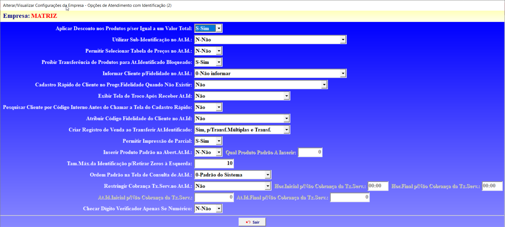
| Campo | Padrão | Descrição / Orientação de Suporte |
|---|---|---|
Aplicar Desconto nos Produtos p/ser Igual a um Valor Total |
S-Sim | Quando ativado, o sistema aplica desconto proporcional nos produtos para que o total do atendimento com identificação bata com um valor específico informado. |
Utilizar Sub-Identificação no At.Id. |
N-Não | Permite registrar uma sub-identificação dentro do atendimento com identificação, útil para dividir o consumo entre grupos ou acompanhantes. |
Permitir Selecionar Tabela de Preços no At.Id. |
N-Não | Permite ao operador escolher manualmente a tabela de preços a ser aplicada ao abrir ou durante o atendimento com identificação. |
Proibir Transferência de Produtos para At.Identificado Bloqueado |
S-Sim | Impede transferir produtos para um atendimento com identificação que esteja bloqueado, evitando lançamentos indevidos. |
| Campo | Padrão | Descrição / Orientação de Suporte |
|---|---|---|
Informar Cliente p/Fidelidade no At.Id. |
0-Não informar | Define se o sistema solicita a informação do cliente para acúmulo de pontos de fidelidade ao abrir ou fechar o atendimento com identificação. |
Cadastro Rápido de Cliente no Progr.Fidelidade Quando Não Existir |
Não | Quando o cliente não está cadastrado no programa de fidelidade, o sistema abre automaticamente o cadastro rápido para registrá-lo. |
Atribuir Código Fidelidade do Cliente no At.Id |
Não | Vincula automaticamente o código de fidelidade do cliente ao atendimento com identificação ao identificá-lo. |
Pesquisar Cliente por Código Interno Antes de Chamar a Tela do Cadastro Rápido |
Não | Antes de abrir o cadastro rápido, o sistema tenta localizar o cliente pelo código interno, evitando duplicatas. |
| Campo | Padrão | Descrição / Orientação de Suporte |
|---|---|---|
Exibir Tela de Troco Após Receber At.Id |
Não | Exibe automaticamente a tela de cálculo de troco após registrar o recebimento de um atendimento com identificação. |
Criar Registro de Venda ao Transferir At.Identificado |
Sim, p/Transf.Múltiplas e Transf. | Define quando o sistema cria um registro de venda ao realizar transferência de atendimento com identificação: nunca, apenas em transferências simples, ou em transferências múltiplas também. |
Permitir Impressão de Parcial |
S-Sim | Permite imprimir a pré-conta parcial do atendimento com identificação antes do fechamento definitivo. |
| Campo | Padrão | Descrição / Orientação de Suporte |
|---|---|---|
Inserir Produto Padrão na Abert.At.Id. |
N-Não | Lança automaticamente um produto padrão ao abrir o atendimento com identificação (ex.: taxa de couvert ou entrada). |
Qual Produto Padrão A Inserir |
0 | Código do produto a ser inserido automaticamente ao abrir o atendimento. Informar apenas quando "Inserir Produto Padrão na Abert.At.Id." estiver ativado. |
Tam.Max.da Identificação p/Retirar Zeros à Esquerda |
10 | Define o tamanho máximo do código de identificação a partir do qual o sistema remove zeros à esquerda na exibição. |
Checar Digito Verificador Apenas Se Numérico |
N-Não | Limita a validação por dígito verificador apenas quando o código de identificação for composto exclusivamente por dígitos numéricos. |
Ordem Padrão na Tela de Consulta de At.Id. |
0-Padrão do Sistema | Define a ordenação padrão dos atendimentos exibidos na tela de consulta do módulo de atendimento com identificação. |
| Campo | Padrão | Descrição / Orientação de Suporte |
|---|---|---|
Restringir Cobrança Tx.Serv.no At.Id. |
Não | Permite configurar janelas de horário ou faixa de atendimentos onde a taxa de serviço não será cobrada automaticamente. |
Hor.Inicial p/Não Cobrança da Tx.Serv. |
00:00 | Horário de início do período em que a taxa de serviço não será cobrada nos atendimentos com identificação. |
Hor.Final p/Não Cobrança da Tx.Serv. |
00:00 | Horário de término do período em que a taxa de serviço não será cobrada. |
At.Id.Inicial p/Não Cobrança da Tx.Serv. |
0 | Número inicial da faixa de atendimentos com identificação isentos de taxa de serviço (quando a restrição é por número de atendimento). |
At.Id.Final p/Não Cobrança da Tx.Serv. |
0 | Número final da faixa de atendimentos com identificação isentos de taxa de serviço. |
Opções de Mesas
Configurações do módulo de mesas: identificação de cliente e atendente, descontos, gasto máximo, consumação mínima, taxa de serviço, adiantamentos, bloqueio, transferências e sub-identificação.
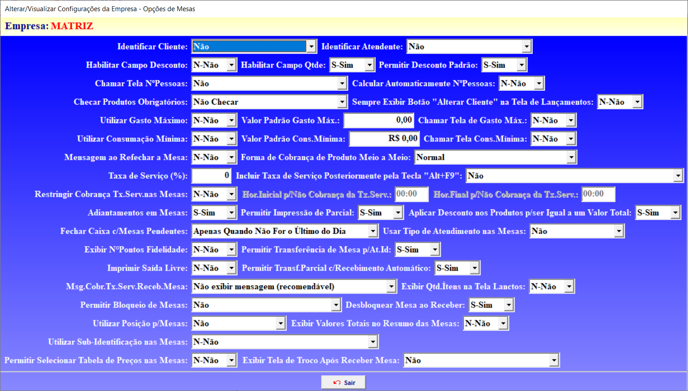
| Campo | Padrão | Descrição / Orientação de Suporte |
|---|---|---|
Identificar Cliente |
Não | Define se o sistema solicita a identificação do cliente ao abrir uma mesa. |
Identificar Atendente |
Não | Define se o sistema solicita a identificação do atendente ao abrir a mesa. |
Habilitar Campo Desconto |
N-Não | Exibe o campo de desconto na tela de lançamentos das mesas. |
Habilitar Campo Qtde |
S-Sim | Exibe o campo de quantidade na tela de lançamentos das mesas. |
Permitir Desconto Padrão |
S-Sim | Aplica automaticamente o desconto padrão do cliente cadastrado durante o atendimento na mesa. |
Sempre Exibir Botão "Alterar Cliente" na Tela de Lançamentos |
N-Não | Exibe o botão para troca de cliente durante o lançamento da mesa, mesmo quando não seria exibido por padrão. |
| Campo | Padrão | Descrição / Orientação de Suporte |
|---|---|---|
Chamar Tela NºPessoas |
Não | Abre automaticamente a tela de informação do número de pessoas ao abrir a mesa. |
Calcular Automaticamente NºPessoas |
N-Não | O sistema calcula automaticamente o número de pessoas sem solicitar confirmação do operador. |
Checar Produtos Obrigatórios |
Não Checar | Define se o sistema verifica a obrigatoriedade de lançar determinados produtos antes de fechar a mesa. |
| Campo | Padrão | Descrição / Orientação de Suporte |
|---|---|---|
Utilizar Gasto Máximo |
N-Não | Ativa o controle de limite máximo de consumo por mesa. |
Valor Padrão Gasto Máx. |
0,00 | Valor padrão do limite máximo de consumo aplicado às mesas quando o gasto máximo está ativado. |
Chamar Tela de Gasto Máx. |
N-Não | Abre automaticamente a tela de configuração do gasto máximo ao abrir a mesa. |
Utilizar Consumação Mínima |
N-Não | Ativa o controle de consumação mínima obrigatória por mesa. |
Valor Padrão Cons.Mínima |
R$ 0,00 | Valor padrão da consumação mínima exigida por mesa. |
Chamar Tela Cons.Mínima |
N-Não | Abre automaticamente a tela de consumação mínima ao abrir a mesa. |
| Campo | Padrão | Descrição / Orientação de Suporte |
|---|---|---|
Mensagem ao Refechar a Mesa |
N-Não | Exibe uma mensagem ao operador quando a mesa é refechada após já ter sido fechada anteriormente. |
Forma de Cobrança de Produto Meio a Meio |
Normal | Define como os produtos divididos meio a meio são cobrados nas mesas. |
Taxa de Serviço (%) |
0 | Percentual de taxa de serviço aplicado automaticamente ao total da mesa. |
Incluir Taxa de Serviço Posteriormente pela Tecla "Alt+F9" |
Não | Permite incluir a taxa de serviço manualmente pressionando Alt+F9, em vez de aplicá-la automaticamente. |
Restringir Cobrança Tx.Serv.nas Mesas |
N-Não | Permite configurar janela de horário em que a taxa de serviço não será cobrada nas mesas. |
Hor.Inicial p/Não Cobrança da Tx.Serv. |
00:00 | Horário de início do período em que a taxa de serviço não será cobrada nas mesas. |
Hor.Final p/Não Cobrança da Tx.Serv. |
00:00 | Horário de término do período em que a taxa de serviço não será cobrada nas mesas. |
Msg.Cobr.Tx.Serv.Receb.Mesa |
Não exibir mensagem (recomendável) | Define se o sistema exibe mensagem sobre cobrança de taxa de serviço ao receber a mesa. |
| Campo | Padrão | Descrição / Orientação de Suporte |
|---|---|---|
Adiantamentos em Mesas |
S-Sim | Permite registrar adiantamentos de pagamento durante o atendimento na mesa antes do fechamento. |
Permitir Impressão de Parcial |
S-Sim | Permite imprimir a pré-conta parcial da mesa antes do fechamento definitivo. |
Aplicar Desconto nos Produtos p/ser Igual a um Valor Total |
S-Sim | Aplica desconto proporcional nos produtos para que o total da mesa bata com um valor específico informado. |
Imprimir Saida Livre |
N-Não | Imprime automaticamente um comprovante de saída livre ao fechar a mesa. |
Permitir Transf.Parcial c/Recebimento Automático |
S-Sim | Permite transferir parcialmente itens de uma mesa com recebimento automático dos valores já pagos. |
Exibir Qtd.Ítens na Tela Lanctos |
N-Não | Exibe a quantidade de itens lançados diretamente na tela de lançamentos da mesa. |
| Campo | Padrão | Descrição / Orientação de Suporte |
|---|---|---|
Fechar Caixa c/Mesas Pendentes |
Apenas Quando Não For o Último do Dia | Define o comportamento do sistema ao tentar fechar o caixa com mesas ainda em aberto. |
Usar Tipo de Atendimento nas Mesas |
Não | Habilita o uso de tipo de atendimento (ex: jantar, almoço) no módulo de mesas. |
Exibir NºPontos Fidelidade |
N-Não | Exibe o saldo de pontos de fidelidade do cliente na tela de lançamentos da mesa. |
Permitir Transferência de Mesa p/At.Id |
S-Sim | Permite transferir uma mesa para um atendimento com identificação. |
Permitir Bloqueio de Mesas |
Não | Permite bloquear mesas para impedir novos lançamentos. |
Desbloquear Mesa ao Receber |
S-Sim | Desbloqueia automaticamente a mesa ao registrar o recebimento, liberando-a para novo atendimento. |
| Campo | Padrão | Descrição / Orientação de Suporte |
|---|---|---|
Utilizar Posição p/Mesas |
Não | Ativa o controle de posição (lugar numerado) dentro da mesa, útil para organizar o atendimento por assento. |
Exibir Valores Totais no Resumo das Mesas |
N-Não | Exibe os valores totais consumidos na tela de resumo geral das mesas abertas. |
Utilizar Sub-Identificação nas Mesas |
N-Não | Permite registrar uma sub-identificação dentro da mesa, útil para separar o consumo entre grupos ou acompanhantes. |
Permitir Selecionar Tabela de Preços nas Mesas |
N-Não | Permite ao operador escolher manualmente a tabela de preços a ser aplicada na mesa. |
Exibir Tela de Troco Após Receber Mesa |
Não | Exibe automaticamente a tela de cálculo de troco após registrar o recebimento da mesa. |